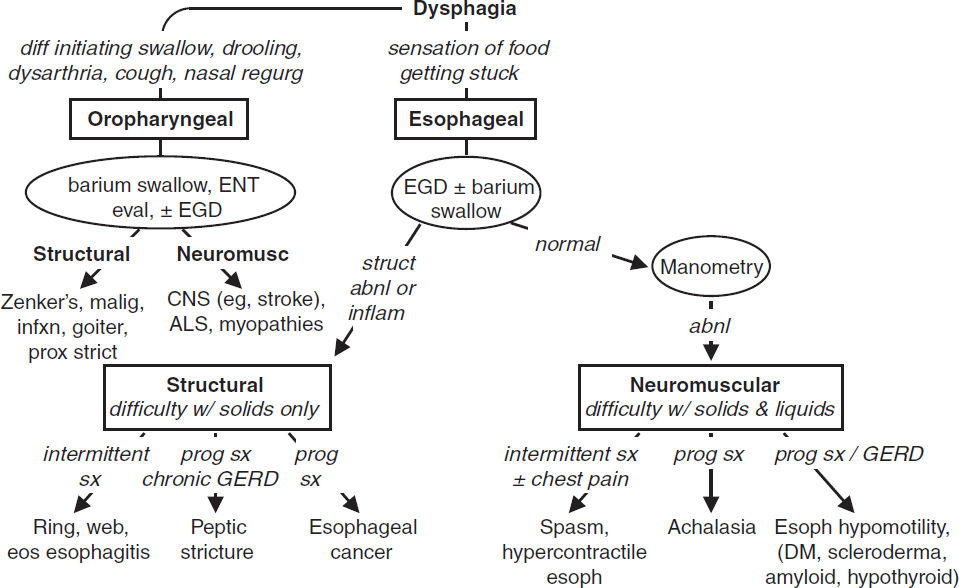
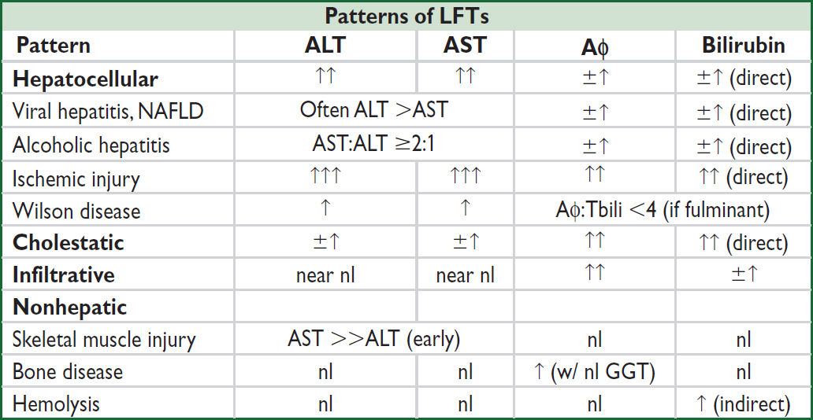
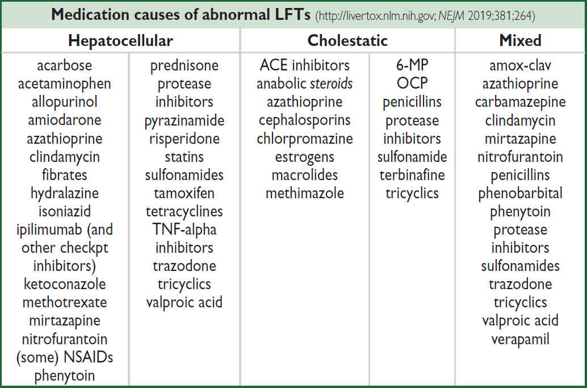
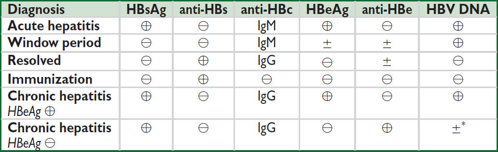
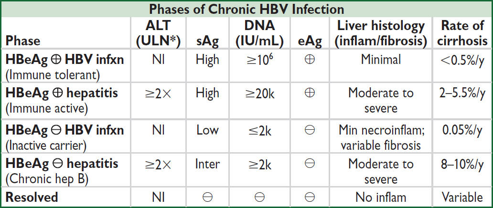

Dysphagia
• Oropharyngeal: inability to propel food from mouth through UES into esophagus
• Esophageal: difficulty swallowing & passing food from esophagus into stomach
Figure 3-1 Etiologies of and approach to dysphagia (NCP Gastrohep 2008;5:393; Neurogastro 2012;24:57)

Structural dysphagia (solids >liquids; JAMA 2015;313:18; Gastro 2018;155:1022)
• Oropharyngeal
Zenker’s divertic. (pharyngeal pouch): in elderly, a/w aspir., dx w/ video fluoro, Rx endo/surg
Malignancy; proximal strictures/rings/webs; infection; radiation injury; goiter; osteophytes
• Esophageal
Rings (intermittent dysphagia, concentric obstructing tissue, Schatzki ring): near GE jxn, a/w food impaction, linked to GERD; Rx w/ PPI, dilation
Webs: thin, partially occlusive structure, proximal, a/w Fe defic. (Plummer-Vinson synd.)
Peptic or XRT strictures, foreign body, tumor, vascular rings (dysphagia lusoria), compression from dilated left atrium compression
Infxn esophagitis: odynophagia >dysphagia; often immunosupp w/ Candida, HSV, CMV
Pill esophagitis: odynophagia >dysphagia; NSAID, KCl, bisphosp., doxy & tetracycline
Eosinophilic esophagitis (JAMA 2021;326:1310): often young/middle-aged ♂. Dx: >15 eos/hpf on bx, esoph dysfxn (ie, dysphagia, food impaction). Rx: 1st line is PPI (½ respond); alternative (or if fail PPI) is 3Ds: 1st elimination Diet (Ø milk, soy, eggs, wheat, nuts, fish); if no Δ, Drugs (swallow inh steroids); if ongoing sx & stricturing, Dilation (Gastro 2020;158:1776).
Neuromuscular dysphagia (solids & liquids; Neurogastero Motil 2021;33:e14058)
• Caused by aberrant motility or innervation of oropharynx/esophagus
• Oropharyngeal: consider CNS disorders (eg, stroke, ALS, myopathies, CNS tumors)
• Esophageal: motility disorder w/ dysphagia, chest pain, GERD; dx: conventional or high-res manometry w/ esophageal pressure topography. Chicago classification v4.0:
1. Disorders of EGJ Outflow: Isolated EGJ outflow obstruction or achalasia. Achalasia: simult. ↓ amp contractions & ↓ LES relaxation; barium swallow w/ dilated esophagus & distal “bird’s beak” narrowing; mostly idiopathic, although can be a/w Chagas; Rx: pneumatic dilation as effective as Heller myotomy (local expertise dependent) (Gut 2016;65:732); peroral endoscopic myotomy; CCB/nitrates/PDEi; botox if Ø surg cand.
2. Disorders of Peristalsis: Absent contractility (failed peristalsis); distal esophageal spasm (uncord. peristalsis w/ simult. contractions); hypercontractile esoph (high amp contract.; Rx w/PPI, nitrates/CCB/PDEi, TCA); ineffective esophageal motility (↓ amp of distal esoph contractions; seen in scleroderma, DM, hypothyroid.; Rx w/ underlying disorder & w/ PPI)
GASTROESOPHAGEAL REFLUX DISEASE (GERD)
Pathophysiology (JAMA 2020;324:2536)
• ↑ acid exposure in esophagus, caused by ↑ transient LES relaxations. Worsened by ↑ intraabd pressure (eg, obesity, pregnancy), ↓ esophagogastric motility, hiatal hernia. Rarely caused by ↑ secretory states (eg, Zollinger-Ellison).
• Precipitants: supine, fatty foods, caffeine, alcohol, cigarettes, CCB, pregnancy, obesity
• Esophageal: heartburn, atypical chest pain, regurgitation, sour taste, dysphagia
• Extraesophageal: dry cough, asthma (often poorly controlled), laryngitis, dental erosions
Diagnosis (Annals 2015;163:ITC1; Nat Rev Gastro Hepatol 2016;13:501)
• Clinical diagnosis based on sx and response to empiric trial of PPI (“PPI test”)
• EGD if: Ø response to PPI or alarm features: dysphagia, vomiting, ↓ wt, anemia, age >60
• If dx uncertain & EGD nl → esoph manometry w/ 24-h pH monitoring ± impedance to dx:
“Nonerosive reflux disease”: no erosion, ulceration or Barrett’s; ½ abnl pH. Unpredictable response to PPI. Most will not progress to erosive esophagitis or Barrett’s.
“Reflux hypersensitivity”: nl acid exposure on pH/impedance w/ symptom–reflux assoc.
“Functional heartburn”: nl acid exposure on pH/impedance w/o symptom–reflux assoc.
Treatment (World J Gastrointest Endosc 2018;10:175; Am J Gastro 2022;117:27)
• Lifestyle: avoid precipitants, lose weight, no eating 2 hrs before bed, exercise, Ø tobacco
• Medical: start low-dose PPI, uptitrate up to 40 mg bid; H2 blockers for intermittent sx
• Refractory (max dose ≥8 wks): confirm w/ pH testing on or off PPI, consider hernia repair
If acidic or sx correlate w/ reflux episodes: surgical fundoplication (emerging Rx: LES sphincter augmentation w/ radiofrequency, implantable magnetic or electrical devices)
If nl pH or no sx correlation = “fxnal dyspepsia” (Gastro 2020;158:2286); Rx w/ TCA, SSRI
Complications (Gastro 2020;158:760)
• Reflux esophagitis (erosions/ulcers above GE jxn), strictures (caused by chronic inflamm)
• Barrett’s esoph. (BE): metaplastic columnar mucosa above GE jxn replaces squam epithel.
Screen if chronic (>5 y) and/or frequent GERD (≥1/wk) in ♂ w/ ≥2 risk factor for Barrett’s/esophageal adeno: >50 y, white, hiatal hernia, central adiposity, smoking, FHx of Barrett’s/esophageal adeno. In ♀, consider only if multiple RFs. 0.1–0.3%/y risk of esoph adenocarcinoma, ↑ if ↑ dysplasia (Am J Gastro 2016;111:30).
Mgmt: PPI. W/o dysplasia: surveillance EGD q3–5y. Low-grade dysplasia: EGD q12mo; possible endoscopic eradication. High-grade dysplasia: endoscopic eradication; consider chemoprophylaxis w/ high-dose PPI & ASA (Lancet 2018;392:400).
PEPTIC ULCER DISEASE (PUD)
Definition & etiologies (BMJ 2019;367:5495)
• Ulcers (break in mucosal lining >5 mm) & erosions (<5 mm) in stomach and duodenum
• Principal risk factors: H. pylori infection >ASA/NSAID use
• H. pylori infection: causes ~80% of duodenal ulcers (DU) & ~30–40% of gastric ulcers (GU). ~50% of world colonized w/ H. pylori, but only 5–10% will develop PUD.
• ASA/NSAIDs: damage to mucosa caused by ↓ prostaglandin synthesis. Cause majority of non–H. pylori-related DU & GU. Regular use a/w 5–6× ↑ odds of GIB.
• Other: smoking, stress, excessive EtOH, gastric cancer/lymphoma, Crohn’s, viral infxn (eg, CMV/HSV in immunosupp), bisphosphonates, steroids (in combo w/ NSAIDs, but not risk factor alone); rarely gastrinoma (Zollinger-Ellison synd.), mastocytosis, idiopathic
• Stress ulcer: risk factors = ICU & coagulopathic, mech vent, h/o GIB, steroid use; Rx w/ PPI
Clinical manifestations
• Epigastric gnawing abdominal pain: relieved with food (DU) or worsened by food (GU)
• Complic.: UGIB, perf. & penetration, gastric outlet obstruction (due to edema & dysmotility)
Diagnostic studies
• Testing for H. pylori: stool Ag, urea breath testing (UBT) or EGD + rapid urease test (RUT) False ⊖ Ag, UBT, RUT if on abx, bismuth, PPI; ∴ stop prior to testing if possible Serology: ↓ utility, useful only to exclude infection in lower prevalence areas
• EGD (definitive dx): if fail empiric Rx or alarm features (see “GERD”); bx GU to r/o malig & H. pylori; repeat EGD in 6–12 wk if >2 cm, malig features, risk factors for gastric cancer (ie, ⊕ FHx, ⊕ H. pylori, atrophic gastritis, metaplasia on bx, >50 y), or sx persist
Treatment (Lancet 2016;388:2355; Gastro 2016;151:51; Gut 2017;66:6; AJG 2017;112:212)
• If H. pylori ⊕ → eradicate (“test and treat”); if ⊖ → gastric acid suppression w/ PPI
1st line: Quad. Rx: 14d x [MNZ + TCN + bismuth + PPI] or [MNZ + amox + clarith + PPI]
Besides PUD, test & Rx if: gastric MALT lymphoma, s/p resection for early gastric ca, FHx gastric ca, unexplained iron def. anemia, ITP, uninvestigated dyspepsia in Pt <60 y, or when initiating long-term NSAIDs
• “Test-of-cure”: 4 wk after Rx, off PPI x 1–2 wk. Use stool Ag, EGD + RUT, or UBT.
• Lifestyle changes: d/c smoking and probably EtOH; diet does not seem to play a role
• Surgery: if refractory to med Rx (1st r/o NSAID use) or for complic. (see above)
GI prophylaxis if taking ASA/NSAID (Am J Gastro 2009;104:728)
• PPI if h/o PUD/UGIB and either (a) on P2Y12 inhib or anticoag, or (b) ≥2 of the following: >60 y, steroids or dyspepsia. Low bleeding risk Pts unlikely to benefit (Gastro 2019;157:403).
• Consider Δ non-selective NSAID to selective COX-2 inhibitor (↓ PUD & UGIB but ↑ CV events), if low CV risk & not on ASA
Definition
• Intraluminal blood loss anywhere from the oropharynx to the anus
• Classification: upper = above the ligament of Treitz; lower = below the ligament of Treitz
• “Severe” GIB: defined as having associated shock, orthostatic hypotension, ↓ Hct by 6% (or ↓ Hb by 2 g/dL), or requiring transfusion ≥2U PRBCs. Requires hospitalization.
Clinical manifestations
• Hematemesis = blood in vomitus (UGIB)
• Coffee-ground emesis = emesis of blood exposed to gastric acid (UGIB)
• Melena = black, tarry stools from digested blood (usually UGIB, but can be SB or R colon)
• Hematochezia = bloody or maroon-colored stools (LGIB or rapid UGIB)
Initial management (Am J Gastro 2021;116:899)
• Assess severity: VS including orthostatic Δs, JVP. Tachycardia (can be masked by βB use) suggests 10% volume loss, orthostatic hypotension 20% loss, shock >30% loss. Scoring predicts rebleeding & mortality: AIMS65, ABC Score & Glasgow-Blatchford.
• History: prior GIB, tempo of current bleed, specific bleeding manifestations (see above), other GI s/s (eg, abd pain, Δ in bowel habits, weight loss, N/V), ASA/NSAID or EtOH use, anticoag/antiplt drugs, h/o or risk factors for cirrhosis, radiation, prior GI or aortic surgery
• Physical exam: localizable abd tenderness, peritoneal signs, masses, LAN, prior surgery, signs of liver disease (hepatosplenomegaly, ascites, jaundice, telangiectasias), rectal exam: masses, hemorrhoids, anal fissures, stool appearance, color
• Resuscitation: placement of 2 large-bore (18-gauge or larger) intravenous lines. Volume replacement: NS or LR to achieve normal VS, UOP, & mental status.
• Lab studies: Hct (may be normal in first 24 h of acute GIB before equilibration) 2–3% → 500 mL blood loss; low MCV → Fe deficient and chronic blood loss; plt, PT/INR,
PTT; BUN/Cr (ratio >36 in UGIB b/c GI resorption of blood ± prerenal azotemia); LFTs
• Transfuse: type & cross; use O-neg if emerg; for UGIB (esp. w/ portal HTN) transfuse w/ more restrictive Hb goal (eg, >7 g/dL or >8 g/dL if CAD) (JAMA 2016;316:2025)
• Reverse coagulopathy: consider FFP to normalize INR (however caution in ESLD where INR does not correlate with bleeding risk); plts >50k, ddAVP if uremic, consider reversal agents if on anticoagulants (qv)
• Triage: alert endoscopist. Consider ICU if unstable VS or poor end organ perfusion.
Intubation for: emergent EGD, ongoing hematemesis, shock, poor resp status, Δ MS
OutPt management if SBP ≥110, HR <100, Hb ≥13 (♂) or ≥12 (♀), BUN <18, Ø melena, syncope, heart failure, liver disease (Clin Gastro Hepatol 2015;13:115)
Diagnostic studies (JACR 2021;18:S139)
• UGIB: EGD w/in 24 h (NEJM 2020;382:1299). If severe bleed, ↑ dx/Rx yield if erythro 250 mg IV given 30 min prior to endoscopy to clear stomach contents.
• LGIB: colonoscopy (identifies cause in >70%); early colo (w/in 24 h) unlikely to improve outcome vs. late (24-96 h) (Gastro 2020;158:168). If hematochezia a/w orthostasis, concern for brisk UGIB → exclude UGIB w/ EGD first. Push enteroscopy, anoscopy, capsule endoscopy in combo w/ urgent colo results in dx >95% of cases (GI Endo 2015;81:889).
• Imaging: if too unstable for endo or recurrent bleeding, consider IR embolization or surgery
tagged RBC scan: can identify general luminal location if bleeding rate ≥0.04 mL/min
CT angiography: faster to obtain than RBC scan, detects bleeding ≥0.3 mL/min
arteriography: can localize exact vessel if bleeding rates ≥0.5 mL/min, allows for IR Rx
• Emergent exploratory laparotomy (last resort) if no localization and life-threatening bleed
Etiology LGIB |
Comment & Treatment (NEJM 2017;376:1054) |
Diverticular bleed (30%) |
Pathophysiology: Intimal thickening and medial thinning of vasa recta as they course over dome of diverticulum → weakening of vascular wall → arterial rupture. Diverticula more common in left colon; but bleeding diverticula more often in right colon. Clinical: older, ASA/NSAIDs, usually painless hematochezia ± abd cramping Treatment: Usually stops spontaneously (~75%); ~20% recur. Can perform endoscopic hemostasis. Surgery (partial colectomy) last resort. |
Polyp/Tumor (20%) |
Typically slow ooze, p/w fatigue, weight loss, iron deficiency, anemia |
Colitis (20%) |
Infectious (see “Acute Diarrhea”), IBD, ischemic colitis, XRT |
Anorectal disorders (20%) |
Internal, external hemorrhoids; anal fissures, rectal ulcers, rectal varices (Rx by ↓ portal venous pressure in cirrhosis), XRT |
Vascular (<10%) |
Angioectasia & AVMs. Hereditary hemorrhagic telangiectasia (Weber-Osler-Rendu): diffuse AVMs throughout GI mucosa (also involve lips, oral mucosa, fingertips). |
Meckel’s diverticulum |
Congenital intestinal pouch due to incomplete obliteration of vitelline duct. 2% of pop, w/in 2′ of IC valve, 2″ long, ♂:♀ 2:1, can present as obscure GIB in adults. Dx w/ 99mTc-pertechnetate scintigraphy. Rx w/ angioembo, surgical resection. |
Obscure GIB (Am J Gastro 2015;110:1265; Gastro 2017;152:497)
• Definition: continued bleeding (melena, hematochezia) despite ⊖ EGD & colo; 5% of GIB
• Etiologies: Dieulafoy’s lesion, GAVE, small bowel angiodysplasia, ulcer or cancer, Crohn’s disease, aortoenteric fistula, Meckel’s diverticulum, hemobilia
• Diagnosis: repeat EGD w/ push enteroscopy/colonoscopy when bleeding is active
If ⊖, video capsule to evaluate small intestine (contraindic. if stricture) (GIE 2015;81:889)
If still ⊖, consider 99mTc-pertechnetate scan (“Meckel’s scan”), enteroscopy (single-balloon, double-balloon, or spiral), tagged RBC scan and arteriography
ACUTE DIARRHEA (<4 weeks’ duration)
Acute Infectious Etiologies (Am J Gastro 2016;111:602; JAMA 2019; 321:891) |
||
NONINFLAMMATORY |
Predom. disruption small intestine absorp. & secretion. Voluminous diarrhea, N/V. ⊖ Fecal WBC & FOB. |
|
Preformed toxin |
“Food poisoning,” <24 h dur. S. aureus (meats & dairy), B. cereus (fried rice), C. perfringens (rewarmed meats). |
|
Viral (Lancet 2018; 392:175) |
Rotavirus |
Outbreak person to person (PTP), daycare; lasts 4–8 d. |
Norovirus |
~50% of all diarrhea. Winter outbreaks; PTP & food/water; no immunity. Lasts 1–3 d. Vomiting prominent. |
|
Bacterial |
E. coli (toxigenic) |
>50% of traveler’s diarrhea; cholera-like toxin; <7 d. |
Vibrio cholerae |
Contam H2O, shellfish; “rice water” stools w/ dehydration |
|
Parasitic (± malab for mos after Rx) |
Giardia |
Streams/outdoor sports, travel, outbreaks. Bloating. Acute (profuse, watery) → chronic (greasy, malodorous). |
Cryptosporidia |
In soil; water-borne outbreak; usually self-limited, can → chronic infxn if immunosupp. Abd pain (80%), fever (40%). |
|
Cyclospora |
Contaminated produce, intl travel (Latin America) |
|
INFLAMMATORY |
Predom. colonic invasion. Small-vol diarrhea. LLQ cramps, tenesmus, fever, typically ⊕ fecal WBC or FOB. |
|
Bacterial |
Campylobacter |
Undercooked poultry, unpasteurized milk; carried by -puppies & kittens. Prodrome w/ abd pain, “pseudoappendicitis”; c/b GBS, reactive arthritis. |
Salmonella (nontyphoidal) |
Eggs, poultry, milk, hamsters. Bacteremia in 5–10%. 10–33% of bacteremic Pts >50 y may develop aortitis. |
|
Shigella |
Abrupt onset; no N/V; gross blood & pus in stool; ↑↑ WBC |
|
E. coli (O157:H7 & inv/hemorrhagic non-O157:H7) |
Undercooked beef, unpasteurized milk, raw produce; PTP. O157 & non-O157 sp. (40%) produce Shiga toxin → HUS (typically in children). Gross blood in stool. |
|
C. difficile |
Vide infra |
|
Vibrio parahaem. |
Undercooked seafood |
|
Salmonella typhi |
Travel to Asia, Africa, South America. Systemic toxicity, relative bradycardia, rose spot rash, ileus → ”pea-soup” diarrhea, bacteremia. |
|
Other |
Yersinia: undercooked pork; unpasteurized milk, abd pain → ”pseudoappendicitis” (aka mesenteric adenitis) Aeromonas, Plesiomonas, Listeria (meats & cheeses) |
|
Parasitic |
E. histolytica |
Contaminated food/water, travel (rare in U.S.); liver abscess |
Viral |
CMV |
Immunosuppressed; dx by shell vial cx of colon bx |
Evaluation (NEJM 2014;370:1532; Digestion 2017;95:293; PLOS One 2017;12:11)
• Ddx: hyperthyroid, adrenal insufficiency, meds (abx, antacids, immune checkpt inhibitors), appendicitis, diverticulitis, radiation, 1st presentation of bowel disorder (eg, IBD, celiac)
• History: stool freq, blood, abd pain, duration of sxs [~1 wk for viral & bacterial (except C. diff), >1 wk for parasitic], travel, food, recent abx, immunocompromise
• PEx: vol depletion (VS, UOP, axillae, skin turgor, MS), fever, abd tenderness, ileus, rash
• Laboratory: calprotectin, stool cx, BCx, lytes, C. diff (if recent hosp/abx), stool O&P (if >10 d, travel to endemic area, exposure to unpurified H2O, community outbreak, daycare, HIV ⊕ or MSM); ± stool ELISAs (viruses, Crypto, Giardia), serologies (E. histolytica); PCR available (but high ⊕ rate & unclear if true vs. colonized; consider if immunocompromised)
• Imaging/endoscopy: consider if warning signs (WS) of fever, severe abd pain, blood or pus in stool, >6 stools/d, severe dehydration, immunosupp, elderly, duration >7 d, hosp-acquired. CT/KUB if ? toxic megacolon; sig/colo if immunosupp or cx ⊖.
Treatment (Am J Gastro 2016;111:602; Clin Infect Dis 2017;65:e45)
• If no WS, nl PO intake → supportive: hydrate, loperamide, bismuth subsalicylate (Ø antichol)
• If mod. dehydration: 50–200 mL/kg/d of oral solution or Gatorade, etc. If severe: IV fluids.
• If suspect traveler’s diarrhea → azithro 1 g x 1 d (due to FQ resistance in Asia), rifaximin, or rifamycin; if suspect protozoal → flagyl or nitazoxanide
• Empiric abx for non–C. diff inflammatory diarrhea reasonable for severe disease (fever, >6 BMs/d, hospitalization, bloody or mucoid stools or high-risk Pt [> 70 yrs, immunosupp]: azithro 1 g x 1 d (preferred if fever or dysentery) or FQ × 3–5 d (↑ resistance)
• Avoid abx if suspect E. coli O157:H7 (exposure hx, gross blood) as may ↑ risk of HUS
CLOSTRIDIOIDES DIFFICILE INFECTION (CDI)
Pathogenesis & epidemiology (NEJM 2015;372:825)
• Ingestion of C. diff spores → colonization when colonic flora Δ’d by abx or chemo → release of toxin A/B → colonic mucosal necrosis & inflammation → pseudomembranes
• Most frequently reported nosocomial infxn; community-acquired w/o abx ~⅓of new cases. A/w any abx during or up to 10 wks post Rx (esp. β-lactams, clinda, FQ).
• Elderly, immunocompromised, and IBD Pts can develop CDI w/o recent abx exposure
Clinical manifestations (a spectrum of disease)
• Asx colonization: <3% healthy adults; ~20% in hospitalized patients on antibiotics
• Acute watery diarrhea (>3 stool/d), occ bloody ± mucus, lower abd pain, fever, ↑↑↑ WBC
• Pseudomembranous colitis: above sx + pseudomembranes + bowel wall thickening
• Fulminant colitis (2–3%): toxic megacolon (colonic atony/absence of BMs, colon dilatation ≥6 cm on KUB, systemic toxicity) and/or bowel perforation
Diagnosis (Ann Intern Med 2018;169:49)
• Only test if symptomatic (diarrhea, s/s of colitis); test liquid stool (unless concern for ileus)
• Stool toxin immunoassay (high Sp) + glutamate dehydrogenase (GDH) (high Se)
• Stool PCR: has ↑ Se, but ⊕ if colonized in absence of active infxn; should not necessarily Rx if ⊕ PCR w/ neg toxin assay (JAMA IM 2015;175;1792)
• Obtain CT abdomen/pelvis if suspect complication (toxic megacolon). Consider flex sig if dx uncertain and/or evidence of no improvement on standard Rx.
Initial treatment (CID 2021;73:5; Am J Gastro 2021;116:1124)
• If possible, d/c abx ASAP; stop antimotility agents & cholestyramine if using (binds vanco)
• Fidaxomicin is now preferred over vancomycin regardless of severity; may be limited by $
• Mild-mod: fidaxomicin 200 mg BID (↓ recurrence rate) or vanco 125 mg PO q6h × 10 d
• Severe (any of the following: >12 BM/d, Temp >103°F, WBC >15, HoTN, ICU care required, ileus): as above; could consider PO+PR vanco
• Fulminant disease: vanco 500 mg PO qid + MNZ 500 mg IV q8h; consider FMT
• If worsening (ileus, ↑ WBC, ↑ lactate, shock, toxic megacolon, peritonitis): abd CT & urgent surgical consult - subtotal colectomy, diverting loop ileostomy or colonic lavage
• If need to cont abx, cont C. diff. Rx for ≥7 d post-abx cessation (Am J Gastro 2016;111:1834)
• Stool carriage 3–6 wk postcessation; retesting for C. diff of limited utility during this time
Recurrent infection (15–30% risk after d/c of abx, most w/in 2 wk of stopping abx)
• 1st recurrence: fidaxomicin 200 mg PO bid × 10 d or vanco 125 mg PO q6h × 10–14 d. Consider adding bezlotoxumab 10 mg/kg IV × 1 during abx Rx (mAb that binds toxin B) as ↓ recurrence; caution in CHF (NEJM 2017;376:305).
• Subsequent recurrences: fidaxomicin or vanco PO pulse → taper. Consult ID. Fecal microbial transplant (JAMA 2017;318:1985) recommended after 3 CDI.
• Prevention: vanco 125 mg PO QD ↓ risk of recurrence (CID 2016;65:651); consider for Pts needing abx w/ h/o severe or recurrent CDI. Avoid acid suppression/abx as able.
CHRONIC DIARRHEA (>4 wk)
General evaluation (JAMA 2016;315:2712; Gastro 2019;157:3)
• Clinically can be classified as watery, fatty, inflammatory
• Additional hx: timing (freq, relation to meals; nocturnal diarrhea a/w organic causes like IBD rather than IBS), abd pain, wt loss, prior surg, chemo/XRT, diet (incl caffeine or poorly absorbed carbs/sugars), infectious sxs, immunocompromise, travel, laxative use, stress
• Hx offending meds: PPI, colchicine, abx, H2RA, SSRIs, ARBs, NSAIDs, chemo, caffeine
• PEx: gen appearance (BMI), signs of systemic disease, surgical scars, rectal tone/DRE
• Lab testing: CBC, metabolic profile, alb, TSH, Fe, fecal calpro; see under each category
• Imaging/endoscopy: colonoscopy for chronic diarrhea of unknown cause. Abd CT/MRI usually warranted if systemic problem suspected.
Osmotic (watery; ⊖ fecal fat, ↑ osmotic gap, ↓ diarrhea w/ fasting)
• Caused by ingestion of poorly absorbed cations/anions (Mg, sulfate, phos; found in laxatives) or poorly absorbed carbs (eg, mannitol, sorbitol [found in chewing gum]) or lactose if lactose intolerant. Diarrhea resolves w/ cessation of offending substance.
• Dx: ↑ stool osmotic gap (see Figure); stool pH <6 if unabsorbed carbohydrates
• Lactose intolerance: can be acquired after gastroenteritis, med illness, GI surg. Clin: bloating, flatulence, discomfort, diarrhea. Dx: H+ breath test or empiric lactose-free diet. Rx: lactose-free diet & lactase tablets.
Secretory (watery; nl osmotic gap, no Δ diarrhea w/ fasting, nocturnal, cramps)
• Caused by secretion of anions or K+ into lumen or inhib of Na absorption → ↑ H2O in stool. Most commonly caused by bacterial toxins from infxn (see above). Other causes:
• Endocrine: Addison’s, VIPoma, carcinoid, Zollinger-Ellison, mastocytosis, hyperthyroid (↑ motility). ✓ serum peptide levels (eg, gastrin, calcitonin, VIP) & urinary histamine.
• GI neoplasm: carcinoma, lymphoma, villous adenoma
• Microscopic colitis: common cause of chronic diarrhea w/ obscure origin. Often seen in middle-aged women w/ autoimmune disorders. NSAIDs, SSRIs, PPIs notable triggers. Grossly normal on colo but bx shows lymphocytic & plasmacytic infiltration of mucosa ± thickened submucosal collagen. Rx: budesonide (1st line), antidiarrheals, cholestyramine, bismuth; consider anti-TNFs if refractory (Gastro 2016;150:242).
• Bile acid-induced diarrhea: ileal resection or disease (eg, Crohn’s) → bile acids in colon → electrolyte & H2O secretion. Rx w/ empiric bile-acid binders (eg, cholestyramine).
Functional/IBS (normal osmotic gap, ↓ diarrhea with fasting): see “Dysmotility”
Malabsorption (fatty; ↑ fecal fat, ↑ osmotic gap, ↓ diarrhea w/ fasting)
• Defective mucosal absorption of nutrients b/c Δs in: mucosal surface (surgical resection) or gen. mucosal dis. (celiac, IBD). Bloating, foul-smelling, floating stools (steatorrhea).
• Celiac disease (JAMA 2017;318:647; Lancet 2018;391:70; Gastro 2019;156:4)
Immune rxn in genetically predisposed Pts (~1% pop) to gliadin, a component of gluten (wheat protein) → small bowel inflammatory infiltrate → impaired absorption
Other s/s: Fe/folate/B12 defic anemia; osteoporosis; dermatitis herpetiformis; ↑ ALT/AST
Dx: best if eating gluten when tested; IgA anti-tissue transglutaminase Ab (most Se), IgA anti-deaminated gliadin peptide Ab; IgA α-endomysial Ab. Duodenal bx confirms dx (blunted villi, crypt hyperplasia, inflamm infiltrate); absence of HLA-DQ2/8 excludes dx.
Rx: gluten-free diet; 7–30% do not respond to diet → ? wrong dx or noncompliant
Complic: ~5% refractory sx, risk of T-cell lymphoma and small bowel adenocarcinoma
• Whipple’s disease: infxn w/ T. whipplei (Lancet 2016;16:13)
Other s/s: fever, LAN, edema, arthritis, CNS Δs, gray-brown skin pigmentation, AI & MS, oculomasticatory myorhythmia (eye oscillations + mastication muscle contract).
Dx: bx/path, IHC, PCR. Rx: PCN + streptomycin or 3rd-gen ceph × 10–14 d → Bactrim ≥1 y.
• Small intestinal bacterial overgrowth (SIBO): colonic bacteria in SI → steatorrhea, B12/Fe defic, protein-losing enteropathy. A/w dysmotility (DM neuropathy, scleroderma), Δ’d anatomy (Crohn’s, surgery, fistulae), immune deficiency, celiac, CF. Dx w/ H+ or 14C -xylose breath testing or empiric abx. Rx w/ 7–10 d abx (rifaximin, MNZ, or FQ).
• Other: s/p short bowel resection (short bowel syndrome), chronic mesenteric ischemia, eosinophilic gastroenteritis, intestinal lymphoma, tropical sprue, Giardia infection
Maldigestion (fatty; ↑ fecal fat, ↑ osmotic gap, ↓ diarrhea w/ fasting)
• Defective intraluminal hydrolysis of nutrients, typ. 2/2 pancreatic/hepatobiliary pathology
• Pancreatic insufficiency: most commonly from chronic pancreatitis or pancreatic cancer. Test w/ stool elastase, chymotrypsin levels, fecal fat, or empiric pancreatic enzyme Rx.
• ↓ bile acids due to ↓ synthesis (cirrhosis), cholestasis (PBC), or s/p ileal resection. Test w/ empiric bile acid replacement therapy.
Inflammatory (⊕ fecal WBC, calprotectin, lactoferrin; ⊕ FOB; fever, abd pain)
• Infections: chronic C. diff, Entamoeba histolytica, Yersinia, CMV, TB especially in immunocompromised hosts. CMV, C. diff notorious for causing exacerbations of IBD.
• Inflammatory bowel disease (Crohn’s, UC); fecal calprotectin helpful for ruling out IBD
• Radiation enteritis, ischemic colitis, neoplasia (colon cancer, lymphoma)
Functional GI disease (~30 types per Rome IV criteria; Gastro 2016;150:1257)
• Recurrent GI sx caused by disorders of gut-brain interaction rather than structural cause
• Irritable bowel syndrome (IBS) (JAMA 2015;313:949; Gastro 2015;149:1399 & 2018;154:1140)
Abd discomfort for 6+ mos a/w ≥2: improves w/ defecation, Δ stool frequency, Δ stool form
IBS-C (constipation predominant) vs. IBS-D (diarrhea predominant) vs. IBS-M (mixed) vs. IBS-U (unclassified). Sx may be affected by stress, diet, lifestyle, probably microbiome.
Treatment: cog. behavior Rx, probiotics, anti-spasmodics, exercise, neuromodulators (eg, TCA, SSRI), Δ diet (↓ fermentable carbs w/ low FODMAP diet, lactose-free diet)
IBS-C: ↑ fiber, laxatives (lubiprostone, linaclotide, tegaserod, tenapanor), biofeedback
IBS-D: loperamide, rifaximin, eluxadoline, bile acid sequestrants, alosetron
• Cyclic vomiting syndrome (CVS): acute recurrent vomiting; a/w marijuana use, personal or FHx of migraine. Acute Rx: antiemetics, IVF, sumatriptan (1st line, followed by aprepitant x 3 d), BDZs; prevention: TCAs/AEDs; avoid marijuana.
Gastroparesis (Nat Rev Dis Primers 2018;4:41)
• Delayed gastric emptying w/o mechanical obstruction, typically p/w nausea (>90%), vomiting (>80%), early satiety (60%), postprandial fullness/pain
• Etiol: DM, post-surg, post-viral, crit. illness, Parkinson’s, opiates, CCB, anti-cholin, idiopath
• Dx: r/o mechanical cause then gastric emptying scintigraphy; (⊕ if retained solids >4 h)
• Treatment: prokinetics (metoclopramide or erythromycin), antiemetics for sx; feeding tube if refractory; consider pyloromyotomy, botox injection, pyloroplasty, or gastric stimulator
Paralytic ileus of the colon & small bowel (Dis Colon Rectum 2021;64:1046)
• Definition: loss of intestinal peristalsis in absence of mechanical obstruction
• Abd discomfort & distention, ↓ or absent bowel sounds, ± N/V, hiccups
• Typically in elderly, hospitalized, ill Pts; precipitated by: intra-abd process (surgery, pancreatitis, peritonitis, intestinal ischemia), severe illness (eg, sepsis), meds (opiates, CCB, anticholin.), metab/endo abnl (thyroid, DM, kidney failure, liver failure, hypoK), spinal cord compression/trauma, neurologic d/o (Parkinson’s, Alzheimer’s, MS)
• KUB/CT w/ colonic dilatation (in ileus, dilated loops of SB) w/o mech obstruction; cecal diam >12 cm a/w high-risk perf in Ogilvie’s syndrome (colonic pseudo-obstruction)
• Treatment: NPO, avoid offending meds, IV neostigmine (monitor for bradycardia), methylnaltrexone; bowel decompression w/ NGT, rectal tube, nutrition support. Ogilvie’s only: colonoscopic decompression; if refractory, colostomy or colectomy.
Constipation (Annals 2015;162:ITC1, Nat Rev Dis Primers 2017;3:17095; JAMA 2019;322:2239)
• Defined as dissatisfaction w/ defecation or (per Rome IV): ≥2 of following during last 3–6 mos ≥25% of the time: straining, lumpy/hard stools, incomplete evacuation, sensation of anorectal obstruction, manual maneuvers to facilitate defecation, stool frequency <3/wk
• Primary etiologies: slow transit vs. pelvic floor dyssynergia
• Secondary etiologies (4 Ms; JAMA 2016:315:185)
Mech obstruction: malignancy, compression, rectocele, strictures
Meds: opioids, TCAs, anticholinergics, CCB, NSAIDs, diuretics, Ca2+, Fe, low fiber diet
Metabolic/endo: DM, hypothyroid, uremia, preg, panhypopit, porphyria, ↑ Ca, ↓ K, ↓ Mg
Myopathy/Neuro: Parkinson’s, Hirschsprung’s, amyloid, MS, spinal injury, dysautonomia
• Dx: H&P w/ DRE. Labs: consider CBC, electrolytes w/ Ca, TSH. Colonoscopy if alarm sx. Anorectal manometry/balloon expulsion test; colonic transit study; defecography.
• Treatment: 1st line: ↑ fluid, fiber, & exercise; emollient laxative (docusate) to soften stool.
2nd line: Bulk laxatives (psyllium, methylcellulose) to ↑ colonic residue, ↑ peristalsis. Stimulant laxatives (senna, castor oil, bisacodyl) to ↑ motility & secretion. Osmotic laxatives (Mg, NaPO4 [avoid in CKD], PEG) to ↑ H2O in colon.
3rd line: Enema/suppository (phosphate, mineral oil, tap water, soapsuds, bisacodyl)
After above failed: linaclotide ↑ stool freq, ↓ straining/bloating (Am J Gastro 2018;113:105).
Lubiprostone (↑ secretion); methylnaltrexone and alvimopan for opioid-induced.
Plecanitide (cGMP agonist) for chronic idiopathic constipation (Gastroenterol 2016;150:S317)
Nutrition in critical illness (also see “Mech Ventilation”) (Crit Care 2015;19:35)
• Enteral & parenteral with similar clinical outcomes (Lancet 2018;391:133)
• Enteral (EN): starting w/in 48 h of ICU admit may ↓ infection & mortality. Contraindic. if bowel obstruction, major GIB, uncontrolled shock. Possible complic: ischemic bowel b/c ↑ demand for splanchnic blood, aspiration PNA, metabolic abnormality.
• Parenteral (PN): start after 7 d if unable to tolerate EN; no clear benefit to early initiation. Contraindic: hyperosmolality, severe electrolyte disturbances, severe hyperglycemia; sepsis is relative contraindication. Complications: hyperglycemia, sepsis (↑ risk of fungal infections), catheter-associated thrombus, refeeding syndrome, abnl LFTs (steatosis, cholestasis, gallbladder sludge due to lack of enteric stimulation).
DIVERTICULOSIS
Definition & pathophysiology (Aliment Pharm Ther 2015;42:664)
• Acquired herniations of colonic mucosa & submucosa in areas where vasa recta penetrate
• Abnormal motility and ↑ intraluminal pressure cause protrusion of colonic wall
Epidemiology
• Risk factors: ↓ fiber, chronic constipation, obesity, smoking, physical inactivity, EtOH, NSAIDs, ↑ age (10% if <40 y; 50–66% if >80 y); ↑ red meat consumption
• Left side (90%, mostly sigmoid) >R side of colon (except in Asia where 75–85% R-sided)
Clinical manifestations
• Usually asx; 5–15% develop diverticular hemorrhage (see “GIB”) and 10–25% diverticulitis
• Limited data for ↑ fiber diet or avoiding nuts/seeds (Thera Adv Gastro 2016;9:213)
DIVERTICULITIS
Pathophysiology (NEJM 2007;357:2057; Gastro 2015;149:1944)
• Retention of undigested food and bacteria in diverticulum → fecalith formation → obstruction → compromise of diverticulum’s blood supply, infection, microperforation
• Uncomplicated (75%): microperforation → localized infection, LLQ pain, fever, ↑ WBC
• Complicated (25%): macroperf → abscess, peritonitis, fistula (65% w/ bladder), obstrxn
Clinical manifestations
• LLQ abdominal pain, fever, nausea, vomiting, constipation or diarrhea
• PEx ranges from LLQ tenderness ± palpable mass to peritoneal signs & septic shock
• Ddx includes IBD, infectious colitis, PID, tubal pregnancy, cystitis, colorectal cancer
Diagnostic studies
• Abdominal CT (I+O+): diverticula, bowel wall thickening, pericolic fat ± abscess, fistula
• Colonoscopy contraindic. acutely as ↑ risk of perforation; for Pts w/o colonoscopy in the past year, perform 6–8 wks after to r/o neoplasm
Treatment (JAMA 2017;318:291; NEJM 2018;379:1635; Gastro 2021;160:906)
• Mild: outPt Rx indicated if Pt has few comorbidities and can tolerate POs
PO abx: (MNZ + FQ) or amox/clav for 7 d; liquid diet until clinical improvement
No abx is noninferior to abx in uncomplicated diverti (Clin Gastroenterol Hepatol 2021;19:503)
• Severe: inPt Rx if cannot take POs, narcotics needed for pain, or complications
NPO, IVF, NGT (if ileus); IV abx (GNR & anaerobic coverage; eg, CTX/MNZ or pip-tazo)
• Abscesses >4 cm should be drained percutaneously or surgically
• Surgery: if progression despite med Rx, undrainable abscess, free perforation
After source control, 4 d abx may be sufficient (NEJM 2015;372:1996)
Resection for recurrent bouts of diverticulitis on a case-by-case basis
Consider lower threshold for urgent & elective surgery for immunocompromised Pts
Prevention (Gastro 2021;160:906)
• Avoid smoking and NSAIDs; insufficient evidence to recommend mesalamine or rifaximin
• Risk of recurrence 10–30% w/in 10 y of 1st episode; nuts, seeds ∅ increase risk
POLYPS
Pathophysiology & epidemiology (NEJM 2016;374:1065)
• Accumulation of mutations in colonic epithelial cell DNA affecting oncogenes & tumor suppressor genes → tumor initiation (formation of adenoma; APC loss of fxn) → tumor progression (adenoma → carcinoma; K-ras gain of fxn, DCC, p53 loss of fxn)
• Risk factors: ↑ age, FHx (sporadic in 1° relatives, Lynch, FAP), IBD, ↑ dietary fat, central adiposity, ↑ EtOH, ↓ fiber, ↑ red meat, smoking, DM
• Protective factors: ↑ physical activity, ASA/NSAIDs, Ca2+ intake, HRT, ↓ BMI; possibly ↑ fiber, vitamin D, fish oil, statins, selenium
• Neoplastic polyps: adenomas (tubular, villous, tubulovillous dysplasia), sessile serrated adenomas/polyps (concern for interval CRC), carcinomas
• Non-neoplastic polyps: hyperplastic, juvenile, Peutz-Jeghers (can undergo malignant transformation), inflammatory
CRC screening (JAMA 2021;325:1978)
• Colonoscopy gold standard. Other options: FOBT/FIT yearly, flex sig q5y or flex sig q10y + FIT every year, fecal DNA testing (eg, Cologuard) q3y or CT colonography q5y
• Start screening in average risk Pts at age 45 (typically q10y unless abnl found)
• If ⊕ FHx, start age 40, or 10 y before age of dx in youngest family member, repeat q5y
Definition (NEJM 2020;383:2652)
• Ulcerative colitis (UC): inflammation of the colonic mucosa; contiguous, starting at rectum
• Crohn’s disease (CD): transmural inflammation anywhere along GI tract, skip lesions
Epidemiology & pathophysiology (Lancet 2016;387:156 & 2017;390:2769)
• Age of onset 15–30 y; bimodal w/ 2nd peak at 50–70 y; 1:1 M:F in N America
• Genetic predisposition (↑ Caucasian/Jewish) + environmental risk factors (smoking ↑ risk for CD, defective mucosal barrier) → T cell dysregulation → inflammation
ULCERATIVE COLITIS (Lancet 2018;389:1756; Am J Gastro 2019:114:384)
Clinical manifestations
• Grossly bloody diarrhea, lower abdominal cramps, tenesmus, small, frequent BM
• Extracolonic (>25%): erythema nodosum, pyoderma gangrenosum, aphthous ulcers, uveitis, episcleritis, thromboembolic events (esp. during a flare; Lancet 2010;375:657), AIHA, seroneg arthritis (most common), PSC (↑ risk cholangio CA, CRC)
• Several scores for severity assessment: Truelove & Witts; Mayo Score/DAI; Montreal
Diagnosis
• Colonoscopy: involves rectum (95%) & extends prox., circumfer., & contig. w/in colon
• Location: proctitis (30–60%), L-sided (15–45%) and extensive (pancolitis; 15–35%)
• Appearance: vascularity loss, friable mucosa, diffuse ulceration, pseudopolyps (chronicity)
• Histology: superficial chronic inflammation; crypt abscesses & architectural distortion
• Barium enema with featureless and tubular appearance of colon (leadpipe appearance)
• Flares: ↑ ESR & CRP (not Se or Sp); ⊕ fecal calprotectin helpful in distinguishing IBD vs. IBS and monitoring for IBD flare (Gastro Hep 2017;13:53); must rule out infection
Complications
• Toxic megacolon (5%): colon dilatation (≥6 cm on KUB), colonic atony, systemic toxicity, & ↑ risk of perf. Rx w/ IV steroids & broad-spectrum abx; surgery if needed.
• Stricture (rectosigmoid), dysmotility, anorectal dysfxn after recurrent inflammation
• ↑ Risk of CRC and dysplasia (see below) after 8 years of active disease
• For Pts s/p surgery w/ ileal pouch, may develop pouchitis (inflammation of ileal pouch, up to ½ of Pts). Rx w/ abx (MNZ, cipro), probiotics.
Prognosis
• 50% in remission at any given time. Intermittent exacerbations in 90%; continual active disease in ~18%. Prox progression in 25% at 10 y. Rate of colectomy at 10 y is 24%.
• Mortality rate of severe UC flare is <2%, & overall life expectancy in UC = non-UC Pts
CROHN’S DISEASE (Lancet 2017;389:1741)
Clinical manifestations (Nat Rev Gastro Hep 2016;13:567)
• Abdominal pain, loose/frequent stools (up to 50% ⊕ FOBT), malaise, wt loss
• Mucus-containing, often nonbloody diarrhea
• N/V, bloating, obstipation if presence of obstruction; extracolonic manifestations as in UC
• Several scoring systems: CD Activity Index (CDAI), Harvey-Bradshaw Index
Diagnosis
• Ileocolonoscopy + bx along w/ small bowel assessment (eg, MR-enterography)
• Small bowel/ileitis (~25%), ileocolonic (~50%), colonic (~25%); isolated upper tract rare
• Appearance: nonfriable mucosa, cobblestoning, aphthous ulcers, deep & long fissures
• Histology: transmural inflammation with mononuclear cell infiltrate, noncaseating granulomas (seen in <25% of mucosal biopsies), fibrosis, ulcers, fissures, skip areas
• Montreal classification: age at dx, disease location & behavior (stricturing vs. nonstricturing, penetrating vs. nonpenetrating), plus modifiers for upper tract & perianal disease
Complications
• Perianal disease: fissures, fistulas, skin tags, perirectal abscesses (in 24% of Pts; perianal disease precedes intestinal symptoms)
• Stricture: small bowel, postprandial abd pain; can lead to complete SBO & require surgery
• Fistulas: perianal, enteroenteric, rectovaginal, enterovesicular, enterocutaneous
• Abscess: fever, tender abd mass, ↑ WBC; steroids mask sx, ∴ need high level of suspicion
• Malabsorption: ileal disease/resection: ↓ bile acids abs → gallstones; ↓ fatty acid abs → Ca oxalate kidney stones; ↓ fat-soluble vitamin abs → vit D deficiency → osteopenia
Prognosis
• Variable at 1 y: ~50% in remission, ~20% flare, ~20% low activity, ~10% chronic active
• At 20 y, majority will have required some surgery; overall life expectancy is slightly ↓
MANAGEMENT (Lancet 2017;398:1756; Mayo 2017;92:1088)
Initial evaluation
• H&P (✓ for intestinal & extraintestinal manifestations) and dx studies as above
• Lab: consider CBC/diff, LFTs, iron studies, B12, folate, vit D, ESR, CRP, fecal calprotectin
• Exclude other etiologies: infectious (espec. TB), ischemic colitis, intestinal lymphoma, CRC, IBS, vasculitis, Behçet’s, celiac disease, small intestinal bacterial overgrowth
• R/o infection (esp. TB, HBV, CMV, O&P) before treating with immunosuppressants and biologics (although not all acutely hospitalized Pts w/ IBD need infxn r/o prior to Rx)
Goals of treatment (Ther Adv Gastro 2015;8:143)
• Induce remission of acute flare → maintain remission; mucosal healing 1° goal
• Step-up Rx (least → most toxic) vs. top-down; (strongest → de-escalate) approach; consider early biologic if severe disease
Medical Therapy for IBD (NEJM 2021;385:1302) |
|
Ulcerative Colitis (Am J Gastrol 2019:114:384) |
|
Mild |
Rectal mesalamine or glucocorticoids as suppository or enema |
Mild- moderate |
Oral 5-ASA: many formulations (sulfasalazine, mesalamine, olsalazine, balsalazide) depending on disease location. Used for induction & maintenance of remission. Complications: pancreatitis, abd pain, diarrhea. MMX-budesonide: PO budesonide released throughout colon for flare. 1st-pass metab ↓ systemic steroid adverse effects of steroid. |
Moderate- severe |
PO prednisone: 40–60 mg w/ taper over several wks to induce remission AZA/6-MP: 0.5–1 mg/kg and uptitrate over several wks for maintenance Complications: BM suppression, lymphoma, pancreatitis, hepatitis ✓ TPMT levels prior to dosing to ↓ risk of generation of toxic metabs. In selected cases, add allopurinol to boost activity in non-responders. Anti-TNF: ↑ remission rate when AZA combined w/ IFX (Gastro 2014;146:392) |
Severe or refractory disease (Lancet 2017; 389:1218; NEJM 2016; 374:1754 & 2017; 76:1723; JAMA 2019; 321:156) |
IV steroids: 100 mg hydrocort q8h or 16–20 mg methylpred q8h to induce remission w/ plan to taper & switch to non-steroid maintenance. Cyclosporine: for severe flares refractory to steroids, 2–4 mg/kg infusion × 7 d w/ goal to Δ to maintenance medication (eg, AZA/6-MP) Anti-TNF (infliximab, adalimumab & golimumab): for steroid-refractory flares or to maintain remission. Complic: reactivation of TB (✓ PPD prior to Rx) or viral hepatitis; small ↑ risk NHL; lupus-like rxn, psoriasis, MS, CHF. Alternative agents: vedolizumab (α4β7 integrin inhibitor); tofacitinib (JAK inhibitor); ustekinumab (IL-12/23 inhibitor); ozanimod (sphinosine-1- phosphate receptor agonist) Investigational: fecal microbiota transplant; etrolizumab (α4β7 inhibitor) |
Crohn’s Disease (JAMA 2021;325:69) |
|
Mild |
Oral 5-ASA: for colonic Crohn’s disease Symptom control: loperamide/cholestyramine for diarrhea management. |
Mild-mod |
PO budesonide: enteric-coated for ileal release (taper over 3 mos) |
Moderate- severe |
PO prednisone: same as UC, for inducing remission, not maintenance AZA/6-MP: same as UC; ↑ remission w/ AZA+IFX (NEJM 2010;362:1383) MTX: 15–25 mg IM/SC or PO qwk for maintenance; 1–2 mo to take effect |
Severe or refractory disease (NEJM 2016; 375:1946) |
IV steroids: same as UC, for inducing remission, not maintenance Anti-TNF: infliximab, adalimumab or certolizumab (pegylated); consider combination therapy with AZA/6-MP Alternative agents: vedolizumab (α4β7 integrin inhibitor); ustekinumab (IL-12/23 inhibitor); natalizumab (α4 integrin inhibitor) Investigational: tofacitinib (JAK inhibitor); ozanimod (S-1-P receptor agonist) |
Surgery
• UC: colectomy if sx refractory to or intolerable side effects from meds, CRC, perforation, toxic megacolon, uncontrolled hemorrhage. Often ileal pouch-anal anastomosis (IPAA).
• CD: resection if refractory; surgery for strictures; diverting ileostomy for perineal disease
Cancer screening (NEJM 2015;372:1441)
• Colon cancer: risk in UC ~2% at 10 y, ~8% at 20 y, ~18% at 30 y. Similar for pancolonic CD, plus risk of small bowel cancer as well. Dysplasia best marker for risk. Other risk factors include: PSC, ⊕ FHx, greater extent of disease, stricture, & pseudopolyps.
• Surveillance: colonoscopy w/ random bx 8 y after dx to eval for dysplasia, q1–3y thereafter based on risk factors. Chromoendoscopy using dye to stain high-risk lesions for targeted bx may be preferable. If high-grade dysplasia or dysplasia-assoc. lesion/mass → colectomy.
ACUTE MESENTERIC ISCHEMIA
Definition and causes (NEJM 2016;374:959)
• Reduced or absent blood flow to small intestine, typically caused by arterial (ie, SMA or its branches) occlusion or transient hypoperfusion or less often by venous occlusion
• Arterial embolism (~40–50%): embolic occlusion to SMA (has narrow take-off angle), often in setting of AF, valvular disease incl. endocarditis, atherosclerotic plaque in aorta
• SMA thrombosis (~20–30%): typically due to atherosclerosis at origin of SMA; other risk factors incl. vascular injury from abd trauma, infxn, or mesenteric dissections/aneurysms
• Nonocclusive mesenteric ischemia (~10%): transient intestinal hypoperfusion due to ↓ CO, athero, sepsis, drugs that ↓ gut perfusion (pressors, cocaine, amphetamines)
• Mesenteric venous thrombosis (MVT, ~5%): a/w hypercoag. states, portal hypertension, IBD, malignancy, inflammation (pancreatitis, peritonitis), pregnancy, trauma, surgery
• Focal segmental ischemia of small bowel (<5%): vascular occlusion to small segments of small bowel (vasculitis, atheromatous emboli, strangulated hernias, XRT)
Clinical manifestations
• Arterial occlusion: sudden intense abd pain out of proportion to tenderness on exam
• Venous occlusion: often more insidious in onset, intermittent pain with peaks and valleys
• Nonocclusive: abd distention & pain, n/v, lower GI bleeding due to mucosal sloughing; often occurring after episode of hypoperfusion (eg, cardiac event or shock)
• Exam ranges: unremarkable ± abd distention to peritoneal (infarction); ⊕ FOBT ~75%
Diagnostic studies
• Dx relies on high level of suspicion; rapid dx essential to avoid infarction (occurs w/in hrs)
• Mortality 20 to >70% if bowel infarcted; dx prior to infarction strongest predictor of survival
• Laboratory: often nl; ~75% ↑ WBC; ↑ amylase, LDH, PO4, D-dimer; ~50% ↑ lactate (late)
• KUB: nl early before infarct; “thumbprinting,” ileus, pneumatosis in later stages
• CT angiography (arterial phase): noninvasive test of choice; venous phase for dx MVT
• Angiography: gold standard; potentially therapeutic; indicated if vasc occlusion suspected
Treatment (NEJM 2016;374:959; World J Emerg Surg 2017;12:38)
• IVF, NPO, optimize hemodynamics (minimize pressors), broad-spectrum abx, anticoagulation w/ heparin ± tPA (for occlusive disease), IV papaverine (vasodilator; for non-occlusive mesenteric ischemia)
• If evidence of peritonitis: to OR for surgical endovascular therapies & bowel resection
• SMA thrombosis: percutaneous (stenting) or surgical revascularization
• SMA embolism: embolectomy (catheter-based aspiration vs. surgical)
• Nonocclusive: correct underlying cause (esp. cardiac)
• Mesenteric venous thrombosis: 3–6 mo anticoag after initial heparinization. Fibrinolysis or thrombectomy typically reserved for Pts w/ hemodynamic instability or refractory sx.
• Focal segmental ischemia: typically surgical resection
CHRONIC MESENTERIC ISCHEMIA
• Pathophysiology: ↓ blood flow to gut typically because of mesenteric atherosclerosis
• Sx: “intestinal angina” = postprandial abd pain, early satiety, & ↓ wt due to fear of eating. If pain becomes constant → could represent acute thrombosis (see above).
• Dx: duplex U/S or CTA; angiography gold stnd; gastric tonometry exercise testing
• Treatment: surgical revascularization (1st line); angioplasty ± stenting; TPN for nutrition
ISCHEMIC COLITIS
Definition & pathophysiology
• Nonocclusive disease 2° to Δs in systemic circulation or anatomic/fxnal Δs in local mesenteric vasculature; often underlying etiology unknown, frequently seen in elderly
• “Watershed” areas (splenic flexure & rectosigmoid) most susceptible; 25% involve R side; confers worse prognosis (Clin Gastroenterol Hepatol 2015;13:1969)
Clinical manifestations, diagnosis, & treatment
• Usually p/w cramping LLQ pain w/ overtly bloody stool; fever and peritoneal signs should raise clinical suspicion for infarction
• Disease spectrum: reversible colopathy (35%), transient colitis (15%), chronic ulcerating colitis (20%), resulting stricture (10%), gangrene (15%), fulminant colitis (<5%)
• Dx: flex sig/colonoscopy or CT abd/pelvis to make diagnosis; r/o IBD, infectious colitis
• Treatment: bowel rest, IV fluids, broad-spectrum abx, serial abd exams; surgery for infarction, fulminant colitis, hemorrhage, failure of med Rx, recurrent sepsis, stricture
• Resolution w/in 48 h w/ conservative measures occurs in >50% of cases
ACUTE PANCREATITIS (Lancet 2020; 396:726; JAMA 2021;325:382)
Pathogenesis
• Pancreatic duct and acinar injury via direct or indirect toxicity → impaired secretion and premature activation of digestive enzymes → autodigestion and acute inflammation
Etiologies (JAMA 2021;325:382)
• Gallstones (40%): ♀ >♂; usually due to small stones (<5 mm) or microlithiasis/sludge
• Alcohol (30%): ♂ >♀; 4–5 drinks/day over ≥5 yrs; usually chronic w/ acute flares
• Metabolic: hypertrig. (2–5%; TG >1000; type I & V familial hyperlipemia); hyperCa
• Drugs (<5%): 5-ASA, 6-MP/AZA, ACEI, cytosine, didanosine, dapsone, estrogen, furosemide, isoniazid, MNZ, pentamidine, statins, sulfa, thiazides, tetracycline, valproate
• Anatomic: divisum, annular pancreas, duodenal duplication cysts, Sphincter of Oddi dysfxn
• Autoimmune (vide infra)
• Familial: suspect if age <20 y; (often a/w mutation in PRSS1, SPINK1 or CFTR gene)
• Infections: ascaris, clonorchis, coxsackie, CMV, EBV, HIV, mumps, mycoplasma, TB, toxo
• Ischemia: shock, vasculitis, cholesterol emboli
• Neoplastic: panc/ampullary tumors, mets (RCC most common, breast, lung, melanoma)
• Post ERCP (5%): Ppx w/ PR indomethacin can ↓ sx; temporary panc duct stent if high risk
• Trauma: blunt abdominal trauma, post-pancreatic/biliary surgery
Clinical manifestations
• Epigastric abdominal or LUQ pain (90%), only ½ w/ bandlike pain radiating to back
• 10% pain-free (due to analgesic/steroid use, immunosuppressed, ΔMS, ICU); ∴ ✓ lipase in unexplained shock, periumbilical or flank (Cullen or Grey Turner signs) bruising
• N/V (90%), abd tenderness/guarding, ↓ bowel sounds, jaundice if biliary obstruction
• Ddx: acute cholecystitis, perforated viscus, SBO, mesenteric ischemia, IMI, AAA leak, distal aortic dissection, ruptured ectopic pregnancy
• Early phase (<1 wk): possible SIRS ± organ failure; late (>1 wk): local complications (qv)
Diagnostic studies (Am J Gastro 2013;108:1400)
• Dx requires 2 of 3: characteristic abd pain; lipase or amylase >3× ULN; ⊕ imaging
• Laboratory: levels of amylase & lipase do not correlate w/ severity of disease
↑ amylase: rises w/in hrs, normalizes w/in 3–5 d (faster than lipase)
false ⊖: 20% EtOH pancreatitis; 50% hypertriglyceridemia (assay interference)
false ⊕: other abd or salivary gland process, acidemia, ↓ GFR, macroamylasemia
↑ lipase: longer t½ than amylase
>3× ULN 99% sensitive, 99% specific for acute pancreatitis
>10k has 80% PPV for biliary dx, 99% NPV for EtOH (Dig Dis Sci 2011;56:3376)
false ⊕: renal failure, other abd process, DKA, HIV, macrolipasemia
ALT >3× ULN has 95% PPV for gallstone pancreatitis (Am J Gastro 1994;89:1863)
• Imaging studies (Am J Gastro 2013;108:1400)
Abd U/S: bowel gas often obscures pancreas visualization; however should be ordered to r/o biliary etiology (ie, gallstones, BD dilatation)
Abd CT: not rec for first 3 days (local complic. not yet visible & concern for AKI w/ IV contrast). However, if persistent pain and/or clinical deterioration after 48–72 h, CT(I+) useful to r/o local complications (necrosis, fluid collections).
MRI/MRCP: Can detect necrosis, assess for stones & ductal disruption earlier than CT
Endoscopic U/S (EUS): useful for occult biliary disease (microlithiasis)
Severity (Gut 2013;62:102; Gastro 2018;154:1096)
• Severity defined by presence of organ failure (AKI, resp failure, GIB, shock) & local or systemic complic. (panc necrosis, fluid collections, gastric outlet obstrxn, splenic & PVT).
Mild: 80% of cases; no organ failure or local/systemic complications; low mortality
Moderate: transient (<48 h) organ failure ± local/systemic complications, high morbidity
Severe: persistent (>48 h) organ failure, very high mortality
Prognosis (NEJM 2016;375:1972)
• Ranson’s, APACHE II: predict severity at 48 h using multiple physiolog. criteria; poor PPV
• BISAP: simple 5-point scoring system (BUN >25, impaired MS, SIRS, age >60 y, pleural effusion) used w/in first 24 h; score ≥3 predicts ↑ risk of organ failure, mortality
• CTSI: CT data at 48–72 h (fluid collect., necrosis) to predict mortality; lags behind clinical sx
Treatment (Am J Gastro 2017;112:797; JAMA 2020;323:2331)
• Fluid resusc.: aggressive in 1st 24 hrs, even if mild. 20 mL/kg IVB → 3 mL/kg/hr. Goal ↓ BUN & Hct over 12–24 h. ✓ UOP (goal 0.5–1 cc/kg/hr); LR superior to NS (↓ SIRS; avoid if ↑ Ca).
• Nutrition (NEJM 2014;317:1983)
Early enteral feeding encouraged, though not superior to oral feeding at 72 h
Mild: Start feeding once without N/V or ileus; may not need to be completely pain free. Low-fat low-residue diet as safe as liquid diet and a/w shorter LOS.
Severe: early (w/in 48–72 h) enteral nutrition indicated and preferred over TPN b/c ↓ infectious complications. Nasogastric non-inferior to nasojejunal feeding.
• Analgesia: IV opioids (monitor respiratory status, adjust dosing if ↑ renal impairment)
• Gallstone pancreatitis: urgent (w/in 24 h) ERCP w/ sphincterotomy if cholangitis, sepsis, or Tbili ≥5. If mild, CCY during initial hosp. to ↓ risk of recurrence (Lancet 2015;386:1261); defer surgery if necrotizing panc. until improvement in inflam. & fluid collections.
• Hypertriglyceridemia: insulin gtt (activates lipoprotein lipase), fibrates, ± apheresis
• No role for Ppx abx in absence of infectious complications (World J Gastro 2012;18:279)
Complications
• Systemic: ARDS, abdominal compartment syndrome, AKI, GIB (pseudoaneurysm), DIC
• Metabolic: hypocalcemia, hyperglycemia, hypertriglyceridemia
• Fluid collections:
Acute fluid collection: seen early; not encapsulated; asymptomatic; resolve in 1–2 wk
Pseudocyst: ~4 wk after initial attack, encapsulated. No need for Rx if asx (regardless of size/location). If sx → endoscopic (Gastro 2013;145:583) vs. perc/surg drainage.
• Pancreatic necrosis: Nonviable pancreatic tissue. CT-guided FNA if infection suspected.
Sterile necrosis: if asx, can be managed expectantly, no role for Ppx abx
Infected necrosis: most often GN gut organism; high mortality. Rx w/ carbapenem, pip/tazo, or [(3rd gen ceph or FQ) + MNZ]. If stable, defer drainage to >4 wk to allow liquefication & WOPN (qv). If sx or unstable, perc. drainage & minimally invasive surgical debridement or endoscopic necrosectomy superior to open necrosectomy.
WOPN (walled off panc. nec.): fibrous wall surrounds necrosis over ≥4 wk; endoscopic or perc. drainage (preferred over open necrosectomy) if infected or symptomatic
• Peripancreatic vascular complications: pseudoaneurysm, abdominal compartment syndrome, splanchnic venous thrombosis (splenic vein most common site)
CHRONIC PANCREATITIS (Lancet 2020;396:499)
Pathogenesis & etiology (Gastro 2013;144:1292; JAMA 2019;322:2422)
• Often recurrent acute attacks → inflam infiltrate → fibrosis → loss of exocrine & endocrine tissue. Pancreatic insufficiency (DM, fat/protein malabsorption) when 90% panc fxn lost.
• TIGAR-O: Toxins (60–80% due to EtOH; smoking), Idiopathic, Genetic (PRSS1, SPINK1, CFTR, CTRC, CASR), Autoimmune, Recurrent panc., Obstruction
Clinical manifestations
• Epigastric pain, N/V; over time can be painless; signs of exocrine insuff (steatorrhea, wt loss) or endocrine insuff (DM: polydipsia, polyuria); 13× ↑ risk of pancreatic cancer
Diagnostic studies (Pancreas 2014;43:1143; Am J Gastro 2020;115:322)
• Labs: amylase/lipase ↑ early, may be nl later. ⊕ fecal fat, ↓ stool elastase & A1AT. Mixed TG breath test alternative to stool elastase. ✓A1c, consider IgG4/ANA & genetic testing if young or ⊕ FHx. If dx w/ CP, measure baseline fat-soluble vitamins (ADEK).
• Imaging: Ca2+ on KUB/CT. ERCP/MRCP/EUS: high sens for dx; may show stricture, dilated ducts. IV secretin stim w/ MRI may ↑ dx yield. Panc fxn testing not widely available.
Treatment (JAMA 2019;322:2422; Lancet 2020;396:499)
• Pancreatic enzyme replacement (may ↓ pain by reducing CCK). Rx routine vitamin D & Ca.
• Pain control: smoking & EtOH cessation, analgesics (start with non-opioids; eg, pregabalin), endoscopy (stone removal or stenting strictures), celiac nerve plexus block, surgery
AUTOIMMUNE PANCREATITIS
Pathogenesis (Am J Gastro 2018;113:1301)
• Type 1: lymphoplasmacytic sclerosing panc. w/ dense fibrosis; ↑ IgG4; high relapse
• Type 2: idiopathic duct-centric pancreatitis; minimal ↑ IgG4; a/w IBD; fewer relapses
Clinical manifestations
• Abdominal pain, can p/w obstructive jaundice and panc mass mimicking panc Ca
• Can be primary, or in a/w IgG4 cholangiopathy, salivary gland disease (eg, Sjögren’s), mediastinal or RP fibrosis, interstitial nephritis, autoimmune thyroiditis, UC/PSC, RA
Diagnosis
• Labs: cholestatic LFTs (↑ Aϕ >AST/ALT), ↑ γ-globulins and IgG4, ⊕ ANA, RF
• HISORt criteria: Histology, Imaging (“sausage pancreas,” bile duct stricture), Serology, other Organ involvement, Response to therapy
Treatment
• Glucocorticoids 1st-line; immunomod. (AZA, MMF, cyclophosphamide, rituximab) if relapse
Tests of hepatocellular injury or cholestasis (J Clin Transl Hepatol 2017;5:394)
• Aminotransferases (AST, ALT): intracellular enzymes released 2° necrosis/inflammation
ALT more specific for liver than is AST (heart, skeletal muscle, kidney, brain, RBC/WBC)
↑ levels seen w/ most types of hepatocellular injury; AST >ALT → MSK injury, MI
• Alkaline phosphatase (Aϕ): enzyme bound in hepatic canalicular membrane ↑ levels seen w/ biliary obstrxn, intrahepatic cholestasis or infiltration of the liver also found in bone, intestines, kidney, placenta; confirm from liver w/: ↑ GGT (or ↑ 5′-NT)
• Bilirubin: product of heme metab (unconjugated, “indirect”) carried by alb to liver where taken up for conjugation (“direct”) to make soluble, then excreted into bile.
↑ indirect hyperbili seen with hemolysis, enzymatic disorders (eg, Crigler-Najjar, Gilbert’s)
↑ direct hyperbili seen with cholestasis, enzymatic disorders (eg, Dubin-Johnson, Rotor’s)
jaundice seen when bili >2.5 mg/dL (esp. in sclera or under tongue); direct ↑ urine bili
Tests of hepatic function
• Albumin: marker for liver protein synthesis, can help differentiate acute vs. chronic liver failure, may be normal in acute hepatocellular injury (t1/2 ~15–18 d)
• Prothrombin time (PT): depends on synthesis of coag factors by liver (except FVIII); b/c t1/2 of some factors (eg, V, VII) is short, ↑ PT can occur w/in hrs of liver dysfxn

• R-value = ratio of ALT:Aϕ normalized to ULN for each = (ALT/ULN) ÷ (Aϕ/ULN)
R >5 suggests hepatocellular injury, <2 suggests cholestatic injury, 2–5 suggests mixed
Acute mild-to-moderate elevation in ALT/AST (<15× ULN)
• Assess risk of EtOH/drug/toxin: H&P; in EtOH AST:ALT ratio >2:1
• Obtain abdominal imaging to r/o cirrhosis, congestion, or biliary obstruction (mixed LFTs)
• Other infectious etiologies: tick borne illnesses, CMV/EBV, COVID-19, others
• Can be initial manifestation of chronic etiologies noted below
Chronic mild-to-moderate elevation in ALT/AST (<15× ULN)
• Viral hepatitis: ✓ HBsAg, anti-HBs, anti-HBc, anti-HCV, IgM anti-HAV
• NAFLD: consider BMI, ✓ lipid panel, HbA1c, liver U/S or elastography
• Other etiologies of cirrhosis (qv)
Hemochromatosis: ✓ TIBC, serum iron, serum ferritin
Wilson disease: serum ceruloplasmin, urine Cu
α-1 antitrypsin (can cause liver disease w/o lung involvement)
• Chronic autoimmune hepatitis ✓ ANA, ASMA, anti-LKMA, IgG, SPEP
• TSH (both hypo & hyperthyroidism associated with abnormal LFTs), celiac disease
• If workup negative, consider biopsy
Acute severe elevation in ALT/AST (>1000)
• Massive elevations (>5000) usually due to ischemic injury or drug-induced hepatitis
• Ischemia: hypotension, shock or severe HF (often >50× ULN), Budd-Chiari: usually diagnosed based on clinical hx, U/S w/ Doppler; ratio ALT:LDH <1.5 if ischemic because of concomitant ↑ LDH (vs. ratio >1.5 w/ toxins, viruses)
• Meds/toxins: acetaminophen, meds (eg, INH, amio, nitrofuratonin), OTC/herbal, cocaine (nb, EtOH should not produce this degree of elevation). Obtain acet. level, tox screen.
• Acute viral infection: hepatitis A–E or reactivation of HBV, EBV/CMV
• Acute autoimmune hepatitis (qv): ✓ IgG, ANA, ASMA
• Acute biliary obstruction (often with sig drop in ALT/AST the next day, Aϕ takes longer to rise & fall): start w/ liver U/S, if unrevealing obtain CT or MRCP
• Rhabdomyolysis and heat stroke

VIRAL
Hepatitis A (ssRNA; 30–45% of acute viral hepatitis in U.S; MMWR 2018;67:1208)
• Transmission & RFs: fecal–oral route; contam. food, water, shellfish; daycare ctr; intl travel
• Incubation: 2–6 wk; no chronic carrier state; once antibody forms → lifelong immunity
• Sx: ↓ appetite, malaise, fever, N/V, RUQ pain, jaundice; rarely ALF (↑ w/ chronic HCV)
• Diagnosis: acute hepatitis = ⊕ IgM anti-HAV; past exposure = ⊕ IgG anti-HAV (⊖IgM)
• Rx for acute HAV: supportive care; refer to liver txplnt center if acute liver failure
• Vaccinate if: MSM, IVDU, chronic liver disease, international travel; Havrix (2 doses)
Hepatitis B (dsDNA; ~45% of acute viral hepatitis in U.S.; JAMA 2020;324:2452)
• Transmission: blood (IVDU, transfusion), sexual, perinatal (vertical)
• Incubation: 6 wk–6 mo (mean 12–14 wk)
• Acute infxn: 70% subclinical, 30% jaundice, <1% acute liver failure (up to 60% mortality)
• Chronic infxn: HBsAg ⊕ >6 mo in <5% of adult-acquired (↑ if immunosupp), >90% of perinatal; ~40% chronic HBV → cirrhosis (↑ risk w/ HCV, HDV, or HIV coinfxn, EtOH)
• HCC: ↑ risk if cirrhosis, ⊕ FHx HCC, African >20 y old, Asian ♂ >40 y old or ♀ >50 y old, or >40 y old w/ ↑ ALT ± HBV DNA >2000. Screen w/ AFP & U/S q6mo.
• Extrahepatic syndromes: PAN (<1%), membranous nephropathy, MPGN, arthritis
• Serologic and virologic tests (screening guidelines: Hepatology 2018:67:1560)
HBsAg: appears before sx; used to screen blood donors; persists >6 mo = chronic HBV
HBeAg: evidence of viral replication and ↑ infectivity
IgM anti-HBc: 1st Ab to appear; indicates acute infection window period = HBsAg becomes ⊖, anti-HBs not yet ⊕, anti-HBc only clue to infxn
IgG anti-HBc: indicates previous (HBsAg ⊖) or ongoing (HBsAg ⊕) HBV infection
anti-HBe: indicates waning viral replication, ↓ infectivity
anti-HBs: indicates resolution of acute disease & immunity (sole marker after vaccination)
HBV DNA: presence in serum correlates w/ active viral replication in liver

*Precore mutant: HBeAg not made, but anti-HBe can develop due to x-reactivity w/ HBcAg; a/w ↑ HBV DNA
• Treatment for acute HBV: supportive; hospitalize for Δ MS or ↑ INR (liver transplant center); consider antiviral therapy if severe or protracted course

*ALT ULN <35 U/L for ♂, <25 U/L for ♀. Adapted from Hepatology 2018;67:1560
• When to treat chronic HBV with anti-virals? (1) immune active phase; (2) HBeAg ⊖ chronic hepatitis B; (3) cirrhosis w/ HBV DNA ≥2K; (4) decomp. cirrhosis due to hep B; (5) acute liver failure due to acute hepatitis B; (6) special pop: preg (3rd trimester w/ HBV DNA ≥200k), inactive carriers treated w/ immunosuppression, HCC, HCV co-infection
• Entecavir or tenofovir: nucleo(s/t)ide analogs, well tolerated, low resistance; at 5 y, HBeAg seroconversion is 30–40% & loss of HBsAg is 5–10% (Lancet Gastro Hep 2016;1:185). Tenofovir preferred if h/o lamivudine resistance; no known tenofovir resistance to date.
• Rx duration: (1) HBeAg ⊕ immune active w/o cirrhosis: if seroconversion (HBeAg ⊖, anti- HBe ⊕), can stop after 1 y if ALT nl & HBV DNA suppressed or until HBsAg clears; (2) HBeAg ⊖ immune reactivation: indefinite; (3) cirrhosis: indefinite
• If undergo liver transplant: HBIG + nucleo(s/t)ide analogue effective in preventing reinfection
• HIV/HBV coinfection: Rx w/ 2 drugs active against both HBV & HIV (https://aidsinfo.nih.gov)
• Immunosuppression: prior to initiating chemoRx, anti-TNF, rituximab, steroids (>20 mg/d >1 mo), screen for HBV; Rx if mod-to-high risk of reactive (incl anti-HBs ⊕ getting rituximab)
• Postexposure (risk infxn ~30%) Ppx: HBIG → vaccine (if unvac or known nonresponder)
Hepatitis C (ssRNA; ~10% of acute viral hepatitis in U.S.; Lancet 2015;385:1124)
• Transmission: blood (IVDU, transfusion before 1992) >sexual; 20–30% w/o clear precipitant
• Incubation: 1–5 mo; mean 6–7 wk
• Acute infxn: 80% subclinical; 10–20% sx hepatitis w/ jaundice; acute liver failure rare; prob of spont clearance a/w IL28B & HLA class II genotypes (Annals 2013;158:235)
• Chronic: up to 85% → chronic hepatitis, 20–30% of whom develop cirrhosis (after ~20 y)
↑ risk of cirrhosis in men, EtOH, HIV; HCC in 1–4% of Pts w/ cirrhosis per year
• Extrahepatic syndromes: mixed cryoglobulinemia, porphyria cutanea tarda, lichen planus, leukocytoclastic vasculitis, thyroiditis, MPGN, IPF, NHL and monoclonal gammopathies
• Serologic, virologic, & genetic tests (screen all adults [✓ anti-HCV] JAMA 2020;323:970)
anti-HCV (ELISA): ⊕ in 6 wk, does not = recovery or immunity; can be ⊖ after recovery
HCV RNA: ⊕ w/in 2 wk, marker of active infection
HCV genotype (1–6): guides duration & predicts response to Rx; geno. 3 a/w ↑ risk HCC
• Dx: acute hepatitis = ⊕ HCV RNA, ± anti-HCV; resolved = ⊖ HCV RNA, ± anti-HCV; chronic = ⊕ HCV RNA, ⊕ anti-HCV
• Treatment indications (www.hcvguidelines.org) (Lancet 2019;393:1453; Hepatology 2020;71:686)
Acute: if no spont. clearance at 12–16 wk, can Rx w/ same regimens for chronic HCV
Chronic: ↓ HCC & mortality. Recommended for all except if ↓ life expectancy.
Recommended First-Line Oral Direct-Acting Antiviral (DAA) Regimens |
|
Regimen (simplified) |
Indication |
Sofosbuvir & velpatasvir |
Genotypes 1–6, 12 weeks Rx |
Glecaprevir & pibrentasvir |
Gentotypes 1–6; 8 weeks Rx |
Simplified treatment: adults w/ HCV w/o cirrhosis or w/ compensated cirrhosis & no prior HCV treatment; cannot have HIV, HBsAg ⊕, pregnancy, HCC, ESRD, or liver transplant; if decompensated or previously treated, refer to GI for assistance. |
|
Based on Hepatology 2020;71:686. Antiviral classes: RNA polymerase inhibitor (“…buvir”); NS5a inhibitor (“…asvir”); NS3/4A protease inhibitor (“…previr”).
• Monitoring on Rx: CBC, INR, LFTs, GFR, HCV VL prior to starting Rx. PIs contraindicated if decomp. liver dx (ascites, encephalopathy) or CPS ≥7. D/c Rx if jaundice, N/V, weakness, 10x ↑ in ALT, or significant ↑ in bili, Aϕ, INR after 4 wks.
• Goal is sustained virologic response (SVR) = Ø viremia 12 wks after completion of Rx. Success depends on genotype but SVR rates >90% with current regimens.
• Special populations (HCV/HIV coinfection, decompensated cirrhosis, s/p liver transplant, renal impairment): www.hcvguidelines.com for updated recs on mgmt
• Vaccinate all chronic HCV patients against HBV and HAV if not immune
• Postexposure (needlestick risk ~3%) Ppx: none, although sofosbuvir-velpatasivir under investigation in clinical trial; if HCV RNA → ⊕, consider Rx w/in 3 mos
Hepatitis D (RNA; Gastro 2019:156;461)
• Transmission: blood or sexual; endemic in Africa & E. Europe. Generally requires host to already have HBV infxn in order to cause co-infection or superinfection; in rare cases (immunosupp s/p liver transplant) can replicate autonomously.
• Natural hx: acute HBV–HDV coinfection resolves in >80% of cases; however, acute HDV superinfection leads to chronic HBV–HDV in most cases (↑ progression to cirrhosis, HCC)
• Dx: ✓ total anti-HDV once in all HBV-infected patients, if antibody ⊕, confirm w/ HDV RNA
Hepatitis E (ssRNA; World J Gastro 2016;22:7030; Gastro Clin N Am 2017;46:393)
• Most common cause of acute viral hepatitis in endemic areas
• Transmission: fecal–oral; travelers to central & SE Asia, Africa and Mexico, exposure to swine. ↑ rates of cases in Europe.
• Natural hx: often asx, sometimes causes acute hepatitis w/ ↑ mort. (10–20%) if pregnant; rarely can become chronic in transplant Pts
• Dx: IgM anti-HEV (through CDC), HEV RNA; treatment is generally supportive only
• Extrahepatic sx: arthritis, pancreatitis, anemia, neuro (GBS, meningoencephalitis)
Other viruses (human pegivirus, CMV, EBV, HSV, VZV)
Classification (J Hep 2015;62:S100, World J Gastro 2015;21:60)
• Type 1: anti-smooth muscle Ab (ASMA), ANA; anti-soluble liver antigen (anti-SLA), a/w more severe disease and relapsing disease (found in 10–30% Pts), IgG often ↑
• Type 2: anti-liver/kidney microsome 1 (anti-LKM1); anti-liver cytosol type 1 (anti-LC-1)
• Overlap syndrome: AIH + PBC (suspect if ⊕ AMA or ⊕ histology → “autoimmune cholangitis”)
• Drug-induced: minocycline, nitrofurantoin, infliximab, hydralazine, α-methyldopa, statins
Diagnosis and treatment (J Hepatol 2015;63:1543, Clin Liver Dis 2015;19:57)
• 70% female; bimodal presentation in the second and fifth decades of life
• 40% present w/ severe AIH (3% ALF) w/ ALT >10 × ULN; 34–45% asx
• Extrahepatic syndromes: thyroiditis, arthritis, UC, Sjögren’s, Coombs’ ⊕ anemia, celiac
• Dx: scoring system combining serologies, ↑ IgG, Ø viral hepatitis, & liver bx (interface hepatitis & lymphoplasmacytic infiltrate) has high Sp & mod Se (Dig Dis 2015;33[S2]:53)
• Rx: (1) ALT or AST >10× ULN (2) IgG >2× ULN + ALT >5× ULN (3) bridging/multiacinar necrosis (4) cirrhosis w/ inflammation on biopsy (5) AST/ALT >2x ULN + symptoms
• Induction Rx: (1) prednisone monoRx; (2) prednisone + AZA, or (3) budesonide (if non-cirrhotic) + AZA → 65–80% remission (asx, nl LFTs, bili, & IgG, none-to-minimal interface hepatitis); taper steroids as able; relapse rate of 50–80% (J Hep 2015;62:S100)
• Nonresponders or AZA intolerant: cyclosporine, tacrolimus, MMF, rituximab, infliximab
OTHER CAUSES OF HEPATITIS OR HEPATOTOXICITY
Alcohol-associated hepatitis (J Hepatol 2016;69:154; Am J Gastro 2018;113:175)
• Sx: progressive jaundice, tender hepatomegaly, fever, ascites, GIB, encephalopathy
• Labs: ALT usually <300–500 w/ AST:ALT > 2:1, ↓ plt, ↑ Tbili & INR indicate severe hepatitis
• Prognosis: scoring systems include Maddrey’s discriminant fxn (MDF), Lille model, MELD
MDF (4.6 × [PT – control] + Tb) ≥32 w/ 30–50% 1-mo mortality if unRx’d (Gastro 1996;110:1847)
Lille model: predicts nonresponse to steroids after 1st week of Rx; score >0.45 predicts poor response to further steroid Rx and a/w ↓ in 6-mo survival (Hep 2007;45:1348)
Combination of Lille + MELD scores best predictor of mortality (Gastro 2015;149:398)
• Rx: consider if MDF ≥32, MELD >18, or presence of encephalopathy
Glucocorticoids (eg, methylprednisolone 32 mg/d or prednisolone 40 mg/d × 4 wk → 4–6 wk taper) may ↓ 1-mo but not 6-mo mortality, a/w ↑ infection (NEJM 2015;372:1619, CD001511)
Contraindic: active GIB, pancreatitis, untreated HBV, uncontrolled bact/fungal/TB infxn
Addition of NAC to steroids ↓ 1-mo but not 6-mo mortality (NEJM 2011;365:1781)
• Consider early transplantation in carefully selected Pts (Gastro 2018;155:422)
Acetaminophen hepatotoxicity (Clin J Transl Hepatol 2016;4:131; BMJ 2016;353:i2579)
• Pathophysiology: >90% of acetaminophen (N-acetyl-p-aminophenol, APAP) metab into nontoxic metab, but ~5% metab by CYP2E1 into NAPQI, a hepatotoxic metab detoxified by glutathione conjugation; APAP overdose (>10 g) depletes glutathione stores → injury
• CYP2E1 induced by fasting, alcohol, certain anticonvulsants and anti-TB drugs, resulting in injury with even low doses (2–6 g) of acetaminophen
• Liver dysfunction may not be apparent for 2–6 d; nausea, vomiting & abdominal pain 1st sx
• Rx: NG lavage, activated charcoal if w/in 4 h. Consider early transfer to transplant ctr
N-acetylcysteine: administer up to 72 h after ingestion, if time of ingestion unknown or chronic ingestion >4g/d; low threshold to start NAC w/ low or undetectable APAP levels
PO NAC (preferred): 140 mg/kg loading dose → 70 mg/kg q4h × 17 additional doses
IV NAC: 150 mg/kg × 1 h → 50 mg/kg × 4 h → 100 mg/kg × 16 h; risk of anaphylaxis (↓ w/ 12-h regimen; Lancet 2014;383:697); use if unable to tolerate POs, GIB, pregnancy, liver injury
Ischemic hepatitis
• “Shock liver” w/ AST & ALT >1000 + ↑↑ LDH (ALT:LDH ratio often <1:5); delayed ↑↑ Tbili
• Seen in HoTN & CHF; often requires ↑ venous + ↓ portal/arterial pressure + hypoxia
Nonalcoholic fatty liver disease (NAFLD) (JAMA 2020;323:1175; Lancet 2021;397:2212)
• Definition: fatty infiltration of liver + absence of EtOH or other cause of steatosis (HCV, etc.)
NAFL = steatosis, Ø inflam; NASH = steatosis + inflam ± fibrosis on bx
• NAFLD: 25% of U.S. pop. & over 60% in T2DM & obesity
• NASH: 2–5% of NAFLD & risk of cirrhosis in NASH w/ fibrosis on bx is 30% at 10 y
• Clinical: 80% asx, ↑ ALT > AST, but nl ALT/AST does not exclude poss. of NASH on bx
• Dx: liver bx remains gold standard. VCT elastography emerging alternative (J Hepatol 2017;66:1022). FIB-4/NAFLD fibrosis score predicts NASH w/ advanced fibrosis w/ PPV >80%.
• Rx (Gastro 2021;161:1657): wt loss (≥10%), exercise, DM control, liraglutide (Lancet 2016;387:679), statins (Metabolism 2017;71:17), vit E in Pts w/o DM (Hepatol 2018;67:328), bariatric surgery (World J Hepatol 2019;11:138). New therapies (eg, PPAR agonist lanifibranor, NEJM 2021;385:1547) emerging. HCC a complication of NAFLD, usually in setting of NASH cirrhosis.
Definition
• Acute liver injury + coagulopathy + encephalopathy w/o preexisting liver dis. (<26 wks)
• Fulminant if encephalopathy <8 wks from jaundice onset, subfulminant if 8–26 wks
• Acute on chronic liver failure: acute insult to liver in Pt w/ underlying chronic liver disease
Etiology (J Hepatol 2015;62:S112)
• Drugs/toxins (nearly 80% of cases in U.S.; Gastro 2015;148:1353, Clin Liver Dis 2017;21:151)
Dose-dependent: acetaminophen (most common cause; >40% of cases in U.S.)
Idiosyncratic, not dose related: anti-TB drugs (INH, RIF, PZA); AEDs (phenytoin, valproate, carbamazepine); NSAIDs; abx (eg, fluoroquinolones, macrolides, nitro-furantoin); drugs of abuse (MDMA & cocaine); others (amiodarone, TCAs)
Toxins: Amanita phalloides (mushroom sp. in West Coast), certain herbal preparations
• Viral: HAV, HBV, HCV (rare), HDV + HBV, HEV (esp. if pregnant). In immunosupp: HSV (50% have skin lesions), EBV, VZV, CMV, HHV6
• Vascular: Budd-Chiari, ischemic hepatitis, hepatic sinusoidal obstruction syndrome
• Other: Wilson disease, pregnancy-related ALF (acute fatty liver, preeclampsia, HELLP), initial presentation of autoimmune hepatitis; idiopathic
Clinical manifestations
• Initial presentation: N/V, malaise, RUQ pain, jaundice, encephalopathy, multiorgan failure
• Neurologic: encephalopathy: grade 1 = attn deficit, disordered sleep; grade 2 = asterixis, confusion; grade 3 = somnolence, rigidity; grade 4 = coma; ↑ ICP w/ bradycardia & HTN
cerebral edema: astrocyte swelling related in part to ↑ ammonia levels
• Cardiovascular: hypotension with low SVR, shock
• Pulmonary: respiratory alkalosis, impaired peripheral O2 uptake, pulm edema, ARDS
• GI: GI tract bleed common (need PPI Ppx), pancreatitis (due to ischemia, drugs, infxn)
• Renal: ATN, hepatorenal syndrome, hyponatremia, hypokalemia, hypophosphatemia
• Hematology: bleeding diathesis w/ thrombocytopenia, ↑ PT/PTT, ↓ fibrinogen, ↓ synthesis of coag factors balanced by ↓ protein C/S; bleeding mostly due to low platelet count, DIC
• Infection: espec. with Staph, Strep, GNRs, and fungi (↓ immune fxn, invasive procedures); fever and ↑ WBC may be absent, most common sites are respiratory, urinary & blood
• Endocrine: hypoglycemia (↓ glc synthesis), metabolic acidosis (↑ lactate), adrenal insuf.
Workup (Clin Liver Dis 2017;21:769)
• CBC, PT/PTT, LFTs, lytes, BUN/Cr, NH3, pH, arterial lactate, acetaminophen level, HIV, amylase/lipase, viral serologies (qv) in all Pts, with additional labs as below if suspected
• Autoimmune hep serologies & IgG levels, ceruloplasmin & serum/urine copper, preg test
• Imaging studies (RUQ U/S or abd CT, Doppler studies of portal and hepatic veins)
• Liver biopsy if underlying etiology remains elusive after initial testing
Management (J Clin Exp Hepatol 2015;5:S104; Gastro 2017;152:644)
• ICU care at liver transplant center for hemodynamic & ventilatory support; CVVH for AKI
• Early listing for liver transplantation in selected Pts (see below)
• Cerebral edema: consider ICP monitoring if grade 3/4 enceph; if ↑ ICP → mannitol 0.5–1.0 mg/kg; if arterial NH3 >150, grade 3/4 enceph, AKI or on vasopressors → prophylactic 3% saline with goal Na 145–155 mEq/L; barbiturates & hypothermia if refractory ↑ ICP
• Encephalopathy: intubate for grade 3 or 4; lactulose is of little benefit & may be detrimental
• Coagulopathy: vit K, FFP/plts/cryo only if active bleeding (↑ risk of volume overload)
• Infection: low threshold for abx (broad spectrum, eg, vancomycin & 3rd-gen ceph.) if suspect infection; anti-fungal coverage in high-risk Pts (TPN, CVVH)
• Rx of specific causes: NAC if acetaminophen; antiviral for HBV; plasma exchange can be temporizing measure for Wilson disease; IV acyclovir for HSV; PCN-G for A. phalloides; delivery of child for pregnancy-related; TIPS, anticoag for Budd-Chiari. Lack of data for use of steroids in autoimmune, but often given (Hepatology 2014;59:612).
• NAC may benefit Pts w/ non-APAP ALF but data inconclusive (Clin Drug Investig 2017;37:473)
• King’s College Criteria for Liver Transplantation consideration:
Acetaminophen ALF: arterial pH <7.30 or Grade III/IV enceph + INR >6.5 + Cr >3.4
Non-acetaminophen ALF: PT >100 or any 3: age <10 or >40 y, jaundice >7 d prior to onsent of encephalopathy, PT >50 or INR >3.5, Tbili >18, unfavorable disease (viral hepatitis, DILI, Wilson’s disease, or low factor V level)
Prognosis (Ann Intern Med 2016;164:724; World J Gastro 2016;22:1523)
• Non-acetaminophen ALF mortality ~70%, acetaminophen-induced ALF mortality ~25–30%
• HBV, Wilson’s, AIH, DILI, Budd-Chiari ~ associated with ↓ prognosis
• Factor V level <20% in Pts <30 yrs or <30% in >30 yrs associated w/ poor prognosis
Definition (Dig Dis 2016;34:374; NEJM 2016;375:767; J Hep 2016;64:717)
• Definition fibrosis & regenerative nodules causing distortion of hepatic architecture
• Decompensated = complication due to ↑ portal pressure such as: variceal bleed, HCC, SBP, encephalopathy, ascites, hepatorenal or hepatopulmonary syndrome
Etiologies
• Alcohol, toxins (eg, arsenic)
• Nonalcoholic fatty liver disease (NAFLD) is the cause of most “cryptogenic cirrhosis”
• Viral hepatitis: chronic HBV, HCV, HDV infection
• Autoimmune hepatitis: ♀, ↑ IgG, ⊕ ANA, ASMA, anti-LKM-1, anti-LC1
• Metabolic diseases: hemochromatosis, Wilson disease, α1-AT deficiency
• Biliary tract diseases: primary biliary cholangitis, secondary biliary cirrhosis (calculus, neoplasm, stricture, biliary atresia), primary sclerosing cholangitis
• Vascular diseases: Budd-Chiari syndrome, R-sided CHF, constrictive pericarditis, SOS
• Medications: amiodarone, methotrexate, vitamin A, valproic acid, isoniazid
Clinical manifestations
• Nonspecific sx (anorexia, fatigue) or jaundice, encephalopathy, ascites, variceal bleeding
Physical exam
• Liver: initially enlarged, palpable (L lobe predom), firm; eventually shrunken, nodular
• Signs of liver failure: jaundice (bili >2.5), spider angiomata & palmar erythema (↑ estra- diol), Dupuytren contractures, white nail lines (Muehrcke lines) & proximal nail beds (Terry nails), ↑ parotid & lacrimal glands, gynecomastia, testicular atrophy, asterixis, encephalopathy, clubbing, hypertrophic osteoarthropathy, anovulation in women
• Signs of portal HTN: splenomegaly, ascites, dilated superficial abd veins (caput medusae), epigastric Cruveilhier-Baumgarten venous hum (flow through recanalized umbilical vein)
Laboratory studies
• LFTs: ↑ bili, ↑ PT/INR (poor correlation w/ bleeding; factor VIII nl b/c not synthesized by liver), ↓ alb, ± ↑ aminotransferases (AST >ALT if late) and ↑ Aϕ (variable)
• Hematologic tests: anemia (marrow suppress., hypersplenism, Fe ± folate defic.), neutro-penia (hypersplenism), thrombocytopenia (hypersplenism, ↓ Tpo production, EtOH tox)
• Chem: ↓ Na (↑ ADH due to ↓ EAV); ↑ Fe/TIBC, ↑ ferritin (released from hepatocytes)
• Lab indices predictive of cirrhosis: AST/plt >2; Lok index; Bonacini score (JAMA 2012;307:832)
• Indirect markers of fibrosis: FibroTest/FibroSURE, Hepascore (good at differentiating significant fibrosis F2 to F4), FIB-4 index (NAFLD, HCV), NAFLD fibrosis score, APRI (HCV), non-invasive imaging (eg, U/S or MR elastography)
Workup (Am J Gastro 2017;112:18; Lancet 2021;398:1359)
• Abd U/S w/ Doppler: liver size & echotexture, r/o HCC, ascites, ✓ patency of vasculature
• Determine etiology: hepatitis serologies (HBsAg, anti-HBs, anti-HCV), autoimmune hepatitis studies (IgG, ANA, ASMA), Fe and Cu studies, α1-AT, AMA
• Assess fibrosis: biomarkers (FibroSURE = panel of 5 markers validated in HCV, ↑ score predictive of fibrosis); elastography (U/S or MR-based; measurement of liver stiffness)
• Liver bx (gold standard): percutaneous or transjugular (consider if ascites or coagulopathy), used to confirm presence of cirrhosis and dx etiology, not always needed
Prognosis (www.mdcalc.com/child-pugh-score-cirrhosis-mortality)
• Modified Child-Turcotte-Pugh (CPS) score based on ascites, enceph., & labs (bili, alb & INR; see Appendix). CPS A (5–6 pts): 1-y survival 100%, B (7–9): 80%; C (10–15): 45%.
• MELD-Na (Model for End-Stage Liver Disease; Gastro 2011;14:1952): used to stratify liver Tx list & predict 3-mo survival in cirrhosis and some acute forms of liver dis. Based on Cr, INR, total bili, Na. Calculator: https://optn.transplant.hrsa.gov/resources/allocation-calculators/meld-calculator/.
If MELD <21, additional predictors of mortality include refractory ascites, ↑ HVPG & ↓ QoL.
MELD-Plus includes alb, chol, LOS, age, WBC (PLOS One 2017;12:e0186301).
Ascites (see “Ascites” for diagnostic eval; Dig Dis 2017;35:402; Hepatology 2021;74:1014)
• Due to portal HTN (defined as hepatic venous pressure gradient [HVPG] >5 mmHg)
• Develops in 60% w/in 10 y; often first decompensating event
• Treatment: ↓ Na intake (1–2 g/d); restrict intake of free water if Na <125
Diuretics: goal diurese ~1 L/d. Use spironolactone ± furosemide in 5:2 ratio (uptitrate as able); urine Na/K >1 implies effective natriuresis if Pt compliant w/ low-Na diet
Avoid NSAIDs/ACEI/ARBs in cirrhosis because interfere w/ diuretic action
Long-term albumin infusions ↓ mortality (Lancet 2018;391:2417), but not widely adopted
• Refractory ascites: seen in 5–10% of Pts; 2-y survival 25%
Defined as diuretic-resistant if on 2-g Na diet w/ minimal weight loss on max diuretics, or diuretic-induced complications (AKI, Na <125, ↑ K, encephalopathy)
Conflicting evid. for d/c’ing βB (Hep 2016;63:1968; J Hepatol 2016;64:574). Discontinue if SBP <90 or MAP ≤82 mmHg, serum Na <120 mEq/L, AKI, HRS, SBP, sepsis, severe alcohol-assoc hepatitis, or poor follow-up. If limited by HoTN, can add midodrine.
Large-volume paracenteses (LVP; >5 L fluid removal): give 6–8 g albumin per L fluid removed (above 5 L) as colloid replacement a/w ↓ risk of post-para circulatory dysfxn & possibly ↓ mortality (Hep 2012;55:1172). Avoid LVP if SBP present because ↑ risk of AKI.
Transjugular intrahepatic portosystemic shunt (TIPS) (Gastro 2017;152:157)
↓ ascites in 75%; ↑ CrCl, ↑ enceph, survival benefit over LVP remains controversial
Contraindic: grade II enceph, CHF or pulm HTN, active infxn or biliary obstruction
Complications: bleeding, fistula; stent thrombosis (1-y patency w/ coated stents ~80%); infxn (“endotipsitis”); new or ↑ enceph in 20–30% (Am J Gastro 2016;111:523), hemolysis
Consider for liver transplant if above fail
• Hepatic hydrothorax: 2° diaphragmatic defect; often unilateral, R >L, ± ascites
Treatment: avoid chest tube (↑ complications); Rx same as ascites (TIPS if refractory). Indwelling pleural catheter potential option if refractory for palliation (Chest 2019;155:307)
Spontaneous empyema can occur (even w/o SBP) → dx thoracentesis; Rx abx
Spontaneous bacterial peritonitis (SBP; see “Ascites”; Hepatology 2021;74:1014)
• High mortality rate; risk factors include ascitic TP <1 g/dL, hx of SBP, current GIB
• Can p/w encephalopathy, abd pain, fever, but often (25%) asx; perform diagnostic paracentesis in all hospitalized patients with cirrhosis and ascites
• Micro: typically, monobacterial GNRs (E. coli, Klebs) >GPCs (S. pneumo, enterococcus)
• Rx: 3rd-gen. ceph is 1st line; consider pip/tazo or mero if ↑ risk of MDRO; vanc if prior MRSA ⊕; IV albumin 1.5 g/kg at time of dx & 1 g/kg on day 3 → ↑ survival (NEJM 1999;341:403)
• Repeat paracentesis at 48 h: expect 25% ↓ in PMNs if Rx working.
• Indefinite Ppx if (1) h/o SBP or (2) ascitic TP <1.5 plus: Na ≤130 or Cr ≥1.2 or BUN ≥25 or [CPS ≥9 + Tbili ≥3] (Am J Gastro 2009;4:993) → cipro 500 mg qd or Bactrim DS qd. Short-term Ppx: CTX 1 g IV × 7d if GIB (Δ to cipro 500 bid/Bactrim DS bid when eating).
Gastroesophageal varices UGIB (see also “GIB”; Hepatology 2017;65:310)
• Presence of varices correlates w/ severity of liver dis (40% of Child A Pts → 85% Child C)
• ↑ varix size, child B/C, & red wale marks assoc w/ ↑ risk of bleeding
• UGIB 1° prevention: screen at time of dx w/ EGD; data best for Pts w/ med-large varices
Nonselective β-blockers: ~50% ↓ risk of bleeding & ↓ mortality if med-large varices. Nadolol, propranolol, or carvedilol; latter ↓ MAP & HVPG more than propranolol; delays progression of varices (Gut 2017;66:1838); may use in Pts w/ HTN. Titrate to max tolerated dose; EGD not req. to document improvement. Hold for criteria listed above.
Endoscopic variceal ligation (EVL): superior to βB in ↓ risk of 1st bleed but no diff in mortality (Ann Hep 2012;11:369); risk of serious complications (esoph perf, ulcers). Repeat q1–4wk until varices gone, w/ f/u EGD at 3 mo then q6–12mo.
βB vs. EVL: choice based on Pt/physician preference; βB often 1st for small varices; larger varices may benefit more from EVL; both for 1° Ppx currently not recommended
• 2° prevention: for all Pts after 1st bleed, given ~50% risk of rebleed & ~30% mortality; βB + EVL >either alone; TIPS if refractory, or consider in child B/C w/in 72 h of admission for EV bleed (↓ rebleeding, ↑ enceph., Ø Δ mort.) (Hepatology 2017;65:310)
Hepatic encephalopathy (HE) (NEJM 2016;375:1660; Hepatology 2014; 60:715)
• Pathogenesis: failure of liver to detoxify NH3 + other substances (eg, ADMA; J Hepatol 2013;58:38) that cause cerebral edema, ↓ O2 consumption, ↑ ROS → brain dysfxn
• Precipitants: bleeding, infxn, med nonadherence, ↓ K, ↓ Na, dehydration, hypoxia, portosystemic shunt (eg, TIPS), meds (eg, sedatives), acute insult to liver (eg, PVT)
• Stages: see section in “Acute Liver Failure”
• Dx: serum NH3 levels have poor Se for dx & monitoring Rx; remains a clinical dx
• Rx: identify/correct precipitants; lactulose (acidification of colon: NH3 → NH4+) w/ goal 2–4 stools/d (PEG may be as effective; JAMA IM 2014;174:1727); add rifaximin 550 mg bid (↓ gut bacteria → ↓ NH3 prod) if refractory or after 2nd recurrence HE on lactulose (NNT=3) (Am J Gastro 2013;108:1458); FMT, oral branched-chain AAs, probiotics may have a role (Cochrane Reviews 2017;2; Gastro 2019;156:1921); maintain K >4, avoid alkalosis as able
Hepatorenal syndrome (HRS) (Hepatology 2021;74:1014, Gastro 2016;150:1525)
• Pathophys: splanchnic vasodilation and renal vasoconstriction w/ ↓ renal blood flow
• Criteria: (1) cirrhosis w/ ascites; (2) acute kidney injury (serum Cr ↑ ≥0.3 mg/dL w/in 48 h or ≥50% ↑ in serum Cr from baseline; Gut 2015;64:531); (3) Ø improvement in Cr after d/c diuretic & volume expansion (1 g/kg/d of albumin × 2 d); (4) Ø shock (prerenal azotemia/ATN); (5) Ø nephrotoxic meds; (6) Ø intrinsic kidney disease
HRS-AKI: development in <2 wk; usually occurs in severe liver failure, often following precipitating event (see later); median survival 2 wk
HRS-CKD: more indolent, median survival 6 mo; liver failure present <than in HRS-AKI
• Precipitants: GIB, overdiuresis, infection, serial LVP, drugs (aminoglycosides, NSAIDs)
• Rx: if critically ill → vasopressor (eg, norepinephrine or vasopressin) + albumin (1 g/kg, max 100 g, bolus daily) to ↑ MAP 10 mmHg. If not critically ill → octreotide (100–200 mcg SC tid) + midodrine (max 15 mg PO tid) + 1 g/kg (max 100 g) albumin on day of presentation followed by 20–60 g albumin qd to ↑ MAP. Terlipressin + albumin ↑ 10 d survival (not yet approved in U.S. but now recommended by AASLD) (NEJM 2021;384:818). May need dialysis or TIPS as bridge to liver transplant.
Hepatocellular carcinoma (HCC; qv in Heme-Onc) (Nature Reviews 2021;7:6)
• ↑ risk w/ cirrhosis of any type (leading cause of death in cirrhosis, 1–6%/y) but esp. ↑ w/ viral (Hep B/C~3–8%/y), concomitant EtOH use, obesity related NASH, HFE or diabetes
• Clinical: asx vs. hepatic decompensation (eg, ascites, HE), PVT w/ tumor thrombus
• Dx: screen Pts w/ cirrhosis q6mo w/ U/S ± AFP; alternative is dual-phase CT/MRI
• Rx: see “HCC” in Heme-Onc
Other complications
• Hepatopulmonary syndrome (HPS) (Dig Dis Sci 2015;60:1914, Hepatology 2021;74:1014)
Abnl gas exchange (A-a gradient ≥15 or PaO2 <80) caused by intrapulmonary vascular dilatations leading to intrapulmonary shunting (improves with O2)
S/S: platypnea-orthodeoxia (dyspnea & hypoxia w/ sitting up), clubbing, spider angiomas
Dx w/ contrast echo showing “late” A-V shunting (contrast in LA 3–6 cycles after RA)
Rx: O2; potential embolization if large vessel on CT, TIPS, liver tx only definitive Rx
• Portopulmonary hypertension (POPH) (Expert Rev Gastro Hepatol 2015;9:983)
Pulm HTN in Pt w/ portal HTN w/o other cause. ESLD→ ↑ endothelin→ pulm vasoconst.
Rx w/ same therapies as for idiopathic PAH, incl prostacyclin analogs, endothelin receptor antagonists, sildenafil; liver transplant is often curative
• Cirrhotic cardiomyopathy: ↓ inotropic & chronotropic response, ↓ systolic & diastolic fxn, ↑ QT, hyperkinetic circulation, high output; ↑ troponin & BNP
• Infxns: unless immune, vaccinate for HAV, HBV, PCV13, PPSV23, COVID-19; flu yearly. Cellulitis in ~20% of Pts hospitalized w/ cirrhosis, often in abd or LE a/w edema.
• Endocrine: diabetes (15–30%), ↑ frequency of adrenal insuffic. (Dig Dis Sci 2017;62:1067)
• Coagulopathy: balanced defects w/ ↓ synth of coag factors, hyperfibrinolysis, ↓ plt balanced by ↓ synthesis anticoag factors (protein C/S), defic. of profibrinolytic factors, ↑ levels of vWF. No support for routine administration of FFP, plt, cryo unless DIC.
• Nutrition: monitor and supplement fat-soluble vitamins, zinc, screen for malnutrition, sarcopenia & fraility; ensure protein intake 1.2–1.5 g/kg/d (Hepatology 2021;74:1611)
• Meds: acetaminophen can be used up to 2 g/d; avoid ASA/NSAIDs; aminoglycosides contraindicated; oral hypoglycemics if compensated but insulin if decompensated
Liver transplantation (Hepatology 2014;59:1144)
• Undertake evaluation when MELD ≥15. Exception points added if HCC, HPS
• Indic: recurrent/severe enceph, refractory ascites, recurrent variceal bleeding, HRS, HPS, PPH, HCC (if no single lesion is >5 cm or ≤3 lesions with largest ≤3 cm), ALF
• Contraindic: inadequate social support, active substance abuse (some exception), sepsis, advanced cardiopulm dis., extrahepatic Ca, cholangio Ca, hemangiosarcoma, persistent noncompliance, AIDS, ALF w/ sustained ICP >50 mmHg or CPP <40 mmHg
• Survival: 1-y up to 90%, 5-y up to 80%, though lower with autoimmune liver disease, such as AIH/PBC/PSC may recur in 10–30% (or more) of allografts
OTHER ETIOLOGIES OF CIRRHOSIS
Hemochromatosis & iron overload syndromes (Am J Gastro 2019;114:1202)
• Recessive disorder of iron sensing or transport leading to tissue iron deposition
• HFE mutations (85% of cases): typically C282Y homozyg. (~0.5% of N. Europeans), rarely C282Y/H63D compound heterozyg. C282Y homozygotes: 28% of ♂ & 1% of ♀ develop sx (delayed since menses ↓ Fe load). C282Y/H63D: only 1.5% manifest dis.
• Non-HFE mutations: hemojuvelin, hepcidin, transferrin receptor 2, & ferroportin
• 2° causes of iron overload: iron-loading anemias (eg, thalassemia major, sideroblastic anemia, aplastic anemia), parenteral iron overload (RBC transfusions, long-term HD), chronic liver disease (due to EtOH, HBV, HCV, NASH, etc.), dietary iron overload
• Sx: fatigue & arthralgias, loss of libido in ♂. In advanced disease (rare): bronze skin (melanin + iron), hypogonadism (esp. in juvenile onset), DM, arthropathy (MCP), CHF, infxns (↑ risk Vibrio, Listeria, Yersinia), cirrhosis (↑ risk if EtOH/fatty liver disease; 15% risk of HCC). Disease also a/w ALS (H63D homozygotes) & porphyria.
• Dx: iron sat >45% (iron/TIBC × 100%); ↑ ferritin (acute phase reactant, so poor Sp; often nl in young Pts). If ↑ iron sat. → ✓ HFE to confirm dx, imaging by MRI (black liver). If HFE ⊕ & ferritin >1000 ng/mL or ↑ LFTs → liver bx for quant Fe index & to stage fibrosis
• Treatment: phlebotomy (250 mL = 1 unit, ~250 mg of Fe) qwk until Fe sat <50% & ferritin 50–100 µg/L, then q3–4mo; PPI ↓ intestinal Fe absorption & may ↓ need for phlebotomy; avoid vit C & uncooked seafood; deferoxamine if phleb. contraindic.; genetic counseling
Wilson disease (World J Hepatol 2015;7:2859)
• Recessive disorder of copper transport (mutation in ATP7B) → copper overload
• Epidemiology: 1 in ~30,000 w/ age of presentation generally ranging from 3 to 55 y
• Extrahepatic s/s: neuro ψ disease, parkinsonism, movement disorder (hepatolenticular disease), Kayser-Fleischer rings (⊕ in 99% w/ neuro ψ but in <50% w/ hepatic disease), Coombs ⊖ hemolytic anemia, renal disease
• Dx: ↑ 24-h urine Cu, ↓ serum ceruloplasmin (Se 90%), liver bx w/ hepatic Cu content, genetic testing for ATP7B gene helpful if unclear dx. In acute liver failure, Aϕ/bili <4 + AST/ALT >2.2 better Se & Sp than urine Cu or ceruloplasmin (Hepatology 2008;4:1167).
• Treatment: chelation w/ D-penicillamine (supplement B6 as D-pen inactivates); alternative is trientine (↓ toxicity w/ ≈ efficacy, but $$), ammonium or bis-choline tetrathiomolybdate (investigational) may ↓ neurologic deterioration compared to trientine. Zinc: ↓ intestinal Cu transport & can help delay disease; best used in conjunction w/ chelation (give 5 h after chelators). Eliminate Cu-rich foods. Transplant for ALF or unresponsive to Rx.
α1-antitrypsin deficiency (α1-AT) (J Hepatol 2016;65:413; NEJM 2020;382:1443)
• Abnl α1-AT → polymerization in liver (cirrhosis) & uninhibited protease activity in lung (emphysema). Affects 1/3000 of European ancestry. Varied presentations: neonatal hepatitis; cholestatic jaundice in children; ↑ AST/ALT or cirrhosis in children/adults.
• Extrahepatic disease: panlobular emphysema, necrotizing panniculitis, ANCA vasculitis
• Dx: serum α1-AT (acute phase reactant) w/ CRP level (to ensure not ↑ due to inflamm.)
gold standard = phenotyping of protease inhibitor (Pi). Alleles most a/w hepatic dis.: Z (63% of ZZ adults have chronic liver dis. and liver fibrosis, may be present in 35% of ZZ individuals w/o overt liver disease) & M (malton) (J Hepatol 2018;69:1357). Liver bx shows characteristic PAS ⊕ cytoplasmic inclusion bodies.
• Treatment: ↓ risk by avoiding EtOH, maintaining a normal BMI; liver transplant if severe
Primary biliary cholangitis (PBC) (Hep 2019;69:394; Nat Rev 2020;17:93; Lancet 2020;396:1915)
• Autoimmune destruction of intrahepatic bile ducts
• Epi: ♀ 40–60 y; a/w Sjögren’s (50%), Raynaud’s, scleroderma, celiac & thyroid disease; may be triggered by infxns or toxins; a/w X monosomy, variants in IL12α & IL12R genes
• Sx: fatigue/sleep disturbance, pruritus, jaundice, 50% asx w/ only LFT abnormalities
• Ddx: PSC, AIH, hepatic sarcoidosis, meds, idiopathic adult ductopenia, biliary stricture/Ca
• Dx: ↑ Aϕ, ↑ bili, ↑ IgM, ↑ chol (mainly HDL-C), ⊕ (AMA) in 95%. If ⊕ AMA, liver bx not needed due to high Se & Sp. 0.5% gen pop ⊕ AMA & nl LFTs → 10% develop PBC at 6 y. If AMA ⊖, liver bx (Pts often ⊕ ANA, smooth muscle Ab; same prognosis as ⊕ AMA).
• Rx: ursodeoxycholic acid (UDCA) (13–15 mg/kg bid), monitor for 3–6 mos → ~25% complete response, ↑ survival & ↓ histologic change & ↓ complications (varices). Biochemical response predicts clinical outcome.
Obeticholic acid (FXR agonist): monoRx if cannot tolerate UDCA (but not in decompen cirrhosis) or if no Δ w/ UDCA after 1 y; found to ↓ Aφ, ↑ pruritus (NEJM 2016;375:631)
Bezafibrate (not available in U.S. but fenofibrate similar) appears to be effective 2nd-line agent in combo w/ UDCA if inadequate response to UDCA (NEJM 2018;378:2171)
Pruritus: cholestyramine (give 2–4 h after UDCA); if refractory sx: naltrexone, rifampin
If ESLD: liver tx; ~20% recur but no impact on long-term survival
Primary sclerosing cholangitis (PSC) (NEJM 2016;375:1161; Clin Liver Dis 2020;15:125)
• Diffuse inflammation of intrahepatic and extrahepatic bile ducts leading to fibrosis & stricturing of biliary system. A/w HLA-B8 and -DR3 or -DR4, frequent ⊕ autoantibodies.
• Epi: ♂ >♀ (20–50 y) ~70% Pts w/ PSC have IBD (usually UC); only 1–4% w/ UC have PSC. ⊕ prognostic factors: ♂, absence of IBD, small duct PSC (Gastro 2017;152:1829).
• Symptoms: fatigue, pruritus, jaundice, fevers, RUQ pain, IBD; 50% of Pts asymptomatic
• Ddx: extrahepatic obstruction, PBC, overlap w/ AIH, IgG4 autoimmune cholangitis, etc.
• Dx: cholangiography (MRCP ± ERCP) → multifocal beaded bile duct strictures; exclude 2° cause; may miss dx if confined to small intrahepatic ducts (“small duct PSC”).
Liver bx if unclear: “onion-skin” fibrosis around bile ducts + some findings similar to PBC.
• Treatment: supportive care, fat-soluble vitamins; no meds have improved survival
UDCA may ↓ Aϕ & improve Sx, but unclear if beneficial
If dominant stricture → endoscopic dilation, stenting or surgical resection can help
Cholangiocarcinoma: 15% lifetime risk; annual surveillance w/ MRCP or U/S & CA19-9
Liver transplantation: ~30% recurrence, though if UC, colectomy may ↓ recurrence
(Modified from The Nature of Disease Pathology for the Health Professions, 2007. Hepatology 2009;49:1729.)
Portal vein thrombosis (PVT) (Clin Liver Dis 2017;10:152; Gastro 2019;156:1582)
• Definition: thrombosis of portal vein often w/ extension into mesenteric vein/splenic vein
• Etiologies: commonly due to cirrhosis or hypercoaguable state (cancer, infection, OCP, collagen vascular diseases, Behçet’s, IBD, surgery, trauma, OCPs, preg)
• Clinical manifestations
acute: abd pain, fever, variceal bleed or asx w/ incidental finding on U/S or CT. If mesenteric vein involved may p/w intestinal infarct. If fever, consider pylephlebitis.
chronic: asx/incidental finding; may p/w s/s of portal HTN → hematemesis 2° variceal bleeding, splenomegaly, encephalopathy; ascites uncommon unless cirrhosis
• Dx: LFTs usually nl; begin w/ U/S w/ Doppler, confirm w/ MRA or CT (I+), angio; consider hypercoag w/u. “Portal cavernoma”: network of hepatopetal collaterals in chronic PVT—can rarely cause biliary obstruction & cholestatic LFTs = portal cholangiopathy.
• Treatment: Acute: If noncirrhotic, LMWH → warfarin or DOAC × 6 mo, or indefinitely if irreversible cause. If cirrhotic, anticoag ↑ recanalization w/o ↑ bleeding (Gastro 2017;153:480); screen for high-risk varices prior to Rx (Nat Rev Gastro Hep 2014;11:435).
Chronic: Anticoag if noncirrhotic or hypercoag state. If cirrhotic, consider txp if sx or progression. In all, screen for varices; if present, variceal bleed Ppx prior to anticoag.
Splenic vein thrombosis
• Can occur 2/2 local inflam. (eg, panc.). Can p/w isol. gastric varices. Splenectomy curative.
Budd-Chiari syndrome (World J Hepatol 2016;8:691)
• Hepatic outflow obstruction 2/2 occlusion of hepatic vein(s) or IVC → sinusoidal congestion and portal HTN. Can be 1° (eg, thrombosis) or 2° (eg, extravascular compression).
• Etiol.: ~50% due to myeloprolif. d/o a/w JAK2 mutations (P. vera, etc.), hypercoag states (systemic, OCP, pregnancy), tumor invasion (HCC, renal, adrenal), trauma, idiopathic
• Symptoms: hepatomegaly, RUQ pain, ascites, dilated venous collaterals, acute liver failure
• Dx: ± ↑ AST, ALT & Aϕ; Doppler U/S of hepatic veins (85% Se & Sp); CT (I+) or MRI/MRV → vein occlusion or ↑ caudate lobe (separate venous drainage); hepatic venography gold standard w/ “spider- web” pattern + assess venous pressure; biopsy only if unclear
• Treatment: Rx underlying condition, anticoag (LMWH → warfarin); consider thrombolysis if acute; angioplasty & stent if short stenosis; consider TIPS or DIPS (U/S-guided direct intrahepatic portosystemic shunt) (if other methods fail to treat sx of portal HTN); liver transplant if ALF or failed other options
Sinusoidal obstruction syndrome (SOS) (Bone Marrow Transplant 2020:55:485)
• Occlusion of hepatic venules & sinusoids (formerly veno-occlusive disease) 2/2 toxic insult
• Etiologies: post HSCT (15%), chemo (cyclophosphamide, cytarabine), XRT, bush tea
• Clinical manifestations: painful hepatomegaly, RUQ pain, ascites, weight gain, ↑ bilirubin
• Dx: U/S w/ reversal of portal flow; dx made clinically (early weight gain, ↓ plt refractory to transfusion, ↑ bili, hx of recent toxins); if necessary, liver bx or HVPG (>10 mmHg)
• Rx: supportive, diuretics; if severe → early defibrotide ↑ survival, but side effects & expensive
• Ppx: defibrotide; ursodeoxycholic acid for high-risk HSCT pop; ? use of low-dose heparin
Pathophysiology (Hepatology 2021;74:1014)
• Portal HTN → ↑ NO & prostaglandins → splanchnic vasodilatation→ ↓ effective arterial volume → ↑ RAAS & ADH → renal Na & H2O retention → volume overload and ascites
• In malignant or inflammatory ascites, leaking of proteinaceous material occurs from tumor or from inflamed/infected/ruptured intraabdominal structures
Symptoms
• ↑ abd girth, wt gain, new abd hernia, abd pain, dyspnea, nausea, early satiety
Evaluation (World J Hepatol 2013;5:251; JAMA 2016;316:340)
• Physical exam: flank dullness (>1500 mL needed), shifting dullness (Se ~83%)
• Radiologic: U/S detects >100 mL fluid; MRI/CT (also help with Ddx)
• Paracentesis: perform in all Pts w/ new ascites, suggested in all hosp. Pts w/ cirrhosis + ascites. Low complic. rate (~1% hematoma formation). Prophylactic FFP or plts does not ↓ bleeding complic. Most useful tests: cell count, alb, total protein (for SAAG), & culture
• Serum-ascites albumin gradient (SAAG): serum alb (g/dL) – ascites alb (g/dL)
SAAG ≥1.1 diagnoses portal HTN with ~97% accuracy (Ann Intern Med 1992;117:215)
If portal HTN + another cause (seen in ~5% of cases) SAAG still ≥1.1
Etiologies |
|
Portal HTN Related (SAAG ≥1.1) |
Non–portal HTN Related (SAAG <1.1) |
Presinusoidal obstruction portal or splenic vein thrombosis, schisto- somiasis, sarcoidosis Sinusoidal obstruction: cirrhosis, acute hepatitis (including EtOH), malignancy (HCC or mets) Postsinusoidal obstruction right-sided CHF (ex: constriction, TR), Budd-Chiari syndrome, SOS |
Malig: peritoneal carcinomatosis; chylous ascites from malignant lymphoma (↑ TG); Meigs’ syndrome (ovarian tumor) Infection: TB, chlamydia/gonorrhea (ie, Fitz-Hugh-Curtis syndrome) Inflam: pancreatitis, ruptured pancreatic/biliary/lymph duct; bowel obstrxn, serositis (SLE) Hypoalbuminemic states: nephrotic syndrome, protein-losing enteropathy |
• Ascites fluid total protein (AFTP): useful when SAAG ≥1.1 to distinguish cirrhosis (AFTP <2.5 g/dL) from cardiac ascites (AFTP ≥2.5 g/dL). Low AFTP (<1 g/dL) assoc. w/ ↑ risk of SBP (see “Cirrhosis” for guidelines on SBP Ppx based on AFTP).
• Cell count: normal limit of PMNs in ascitic fluid up to 250 PMNs/mm3. Bloody tap (typically from traumatic para) can skew cell count; subtract 1 PMN for every 250 RBCs to correct PMN count. Ascitic PMNs ≥250 suggest infection.
• Other tests: amylase (pancreatitis, gut perforation); bilirubin (test in dark brown fluid, suggests bile leak or proximal intestinal perf); TG (chylous ascites); BNP (HF); cytology (peritoneal carcinomatosis, ~95% Se w/ 3 samples). SBP a/w ↓ glc & ↑ LDH. Ascites culture (prior to abx if possible, should have both aerobic & anerobic w/ 10 cc per bottle)
Treatment (see “Cirrhosis” for details)
• If 2° to portal HTN: ↓ Na intake (<2 g/d) + diuretics; if refractory → LVP (serial) or TIPS
• If non–portal HTN related: depends on underlying cause (TB, malignancy, etc.)
Bacterial peritonitis (Gut 2012;61:297; Hepatology 2021;74:1014)
Ascites PMN |
⊕ Ascites Culture |
⊖ Ascites Culture |
≥250/µL |
Spontaneous bacterial peritonitis (SBP): gut bacterial translocation to ascites. In cirrhosis, ↓ ascites opsonins (esp. if ↓AFTP) ↑ risk of infxn. Infection usually monomicrobial: most common → E. coli, Klebs, S. pneumo; rarely Staph & Pseudo. Rx 3rd-gen ceph; carbapenem if critically ill. 2° bacterial peritonitis: 2/2 intra-abd abscess, perf. Runyon’s criteria: AFTP >1 g/dL, glc <50 mg/dL, LDH >ULN for serum. Cx polymicrobial. Rx 3rd-gen ceph. + MNZ; urgent abd imaging ± ex lap. |
Culture-⊖ neutrocytic ascites (CNNA): cell counts suggest infxn but cx ⊖. No recent abx, w/o other explan. for counts. Often do have SBP and should be treated with empiric regimen. |
<250/µL |
Nonneutrocytic bacterascites (NNBA): ⊕ cx w/o ↑ PMNs. Natural course may resolve w/o Rx. Start abx if symptomatic; if asymptomatic repeat para in 48 hrs. Cx w/ 1 org.: Misc. GPC, E. coli, Klebs, misc. GNR. |
(Normal) |
Peritoneal dialysis-associated: cloudy fluid, abd pain, fever, nausea. Dx can be made with >50 PMNs. Culture most often GPC (50%) or GNR (15%). Rx: vanc + gent (IV load, then administer in PD). |
||
CHOLELITHIASIS (GALLSTONES)
Epidemiology & pathogenesis (J Hepatol 2016;65:146; Gastro 2016;151:351)
• Affects ~10% of Western populations, 15–25% of people develop sx over 10–15 y
• Bile = bile salts, phospholipids, cholesterol; ↑ cholesterol saturation in bile + accelerated nucleation + gallbladder hypomotility → gallstones
• Risk factors: ♀; South, Central, Native American; ↑ age (>40 y); obesity, TPN, rapid ↓ wt; dyslipidemia; preg., drugs (OCPs, estrogen, clofibrate, octreotide); ileal dis., genetics
• Statin use ↓ risk of sx gallstones & cholecystectomy (Hepatol Res 2015;45:942)
Types of gallstones (J Hepatol 2016;65:146)
• Cholesterol (90%): 2 subtypes
mixed: contain >50% cholesterol; typically smaller, multiple stones
pure: 100% cholesterol; larger, yellow, white appearance
• Pigment (10%)
Black: unconjugated bili & calcium; seen w/ chronic hemolysis, cirrhosis, CF, Gilbert synd
Brown: stasis & infxn in bile ducts → bacteria deconjugate bilirubin → precipitates w/ Ca; found pred in bile ducts; seen w/ biliary strictures, parasites, post-cholecystectomy
Clinical manifestations
• Asx in ~80%. Biliary pain develops in 1–4%/y. Once sx, rate of complications ~1–3%/y.
• Biliary pain = episodic RUQ or epigastric pain; begins abruptly, continuous, resolves slowly and lasts 30 min–3 h; ± radiation to scapula; precip by fatty foods; nausea
• Physical exam: afebrile, ± RUQ tenderness or epigastric pain
Diagnostic studies
• Labs normal in most
• RUQ U/S: Se & Sp >95% for stones >5 mm; should be performed after ≥8 h fast for distended, bile-filled gallbladder. If ⊖, repeat in 1 mo to detect missed stones
• Endoscopic U/S (EUS): Se 94–98% in Pts w/ biliary pain but nl U/S (J Hepatol 2016;65:146)
• CT scan/KUB is less Se; stones often isodense w/o enough calcium & will be missed
Treatment (Am Fam Physician 2014;89:795; J Hepatol 2016;65:146)
• Cholecystectomy (CCY), usually laparoscopic, if symptomatic (earlier is better)
• CCY in asx Pts if: GB calcification (↑ risk of cancer), GB polyps >10 mm, stones >3 cm; Pts undergoing bariatric surgery, cardiac Tx candidates, hemolytic anemia (sickle cell)
• Options if ↑ risk for surgery: percutaneous drainage, endoscopic transpapillary drainage
• UDCA can be trialed for cholesterol stones w/ biliary pain or if poor surgical candidate, but takes ~3 mo to work; ↓ risk of gallstone formation that occurs w/ rapid wt ↓
• Pain: NSAIDs drugs of choice, efficacy ≈ opiates & avoids ↑ sphincter of Oddi pressure
Complications
• Cholecystitis: 20% of Pts with symptomatic biliary pain progress to cholecystitis w/in 2 y
• Choledocholithiasis → cholangitis or gallstone pancreatitis
• Mirizzi syndrome: hepatic duct compression by GB stone → jaundice, biliary obstruction
• Cholecystenteric fistula: stone erodes through gallbladder into bowel, ~15% w/ colon
• Gallstone ileus: SBO (usually at term ileum) due to stone in intestine that passed thru fistula
• Gallbladder carcinoma: ~1% in U.S., often found late stage, a/w poor prognosis
CHOLECYSTITIS (JAMA 2022;327:965)
Pathogenesis
• Acute cholecystitis: stone impaction in cystic duct → inflammation behind obstruction → GB swelling ± secondary infection (50%) of biliary fluid
• Acalculous cholecystitis: GB stasis & ischemia (w/o cholelithiasis) → necroinflammation. Occurs in critically ill. A/w postop major surgery, TPN, sepsis, trauma, burns, opiates, immunosuppression, infxn (eg, CMV, Candida, Crypto, Campylobacter, typhoid fever).
Clinical manifestations
• History: RUQ/epigastric pain ± radiation to R shoulder/back, nausea, vomiting, fever
• Physical exam: RUQ tenderness, Murphy’s sign = ↑ RUQ pain and inspiratory arrest with deep breath during palpation of R subcostal region, ± palpable gallbladder
• Laboratory evaluation: may see ↑ WBC, ± mild ↑ bilirubin, Aϕ, ALT/AST, amylase; if AST/ALT >500 U/L, bili >4 mg/dL or amylase >1000 U/L → choledocholithiasis
Diagnostic studies
• RUQ U/S: high Se & Sp for stones, but need specific signs of cholecystitis: GB wall thickening >4 mm, pericholecystic fluid and a sonographic Murphy’s sign
• HIDA scan: most Se test (80–90%) for acute cholecystitis. IV inj of HIDA (selectively secreted into bile). ⊕ if HIDA enters BD but not GB. 10–20% false ⊕ (cystic duct obstructed 2/2 chronic cholecystitis, lengthy fasting, liver disease).
Treatment (Ann Surg 2013;258:385; NEJM 2015;373:357)
• NPO, IV fluids, nasogastric tube if intractable vomiting, analgesia
• Antibiotics (E. coli, Klebsiella and Enterobacter sp. are usual pathogens) ([2nd- or 3rd-generation cephalosporin or FQ] + MNZ) or piperacillin-tazobactam
• CCY (typically laparoscopic) w/in 24 h ↓ morbidity vs. waiting 7–45 d
• If unstable for surgery, EUS-guided transmural, ERCP-guided transcystic duct drainage, or percutaneous cholecystotomy (if w/o ascites or coagulopathy) are alternatives to CCY
• Intraoperative cholangiogram or ERCP to r/o choledocholithiasis in Pts w/ jaundice, cholangitis or stone in BD on U/S (see below)
Complications
• Gangrenous cholecystitis: necrosis w/ risk of empyema and perforation
• Emphysematous cholecystitis: infection by gas-forming organisms (air in GB wall)
• Perforation: ~10% of cases, due to delay in diagnosis; pericholecystic abscess forms
• Post CCY: bile duct leak, BD injury or retained stones, cystic duct remnant, sphincter of Oddi dysfxn
CHOLEDOCHOLITHIASIS
Definition
• Gallstone lodged in common bile duct (CBD)
Epidemiology
• Occurs in 15% of Pts w/ gallbladder stones; can form de novo in CBD due to biliary stasis
Clinical manifestations
• RUQ/epigastric pain 2° obstrxn of bile flow → ↑ CBD pressure, jaundice, pruritus, nausea
• Rarely asymptomatic
Diagnostic studies (J Hepatol 2016;65:146; Gastrointest Endosc 2019;89:1075)
• Labs: ↑ bilirubin, Aϕ; transient spike in ALT or amylase suggests passage of stone
• RUQ U/S: BD stones seen ~50–80% of cases; usually inferred from dilated CBD (>6 mm)
• ERCP preferred modality when likelihood high (eg, visualized stone, cholangitis, bili >4, or dilated CBD on U/S + bili 1.8–4 mg/dL); cholangiogram (percutaneous, operative) if ERCP unavailable or unsuccessful; EUS/MRCP to exclude BD stones if suspicion intermediate (eg, no stone, dilated ducts on U/S, bili 1.8–4 mg/dL, gallstone panc., age >55, or abnl non-bili LFT)
Treatment
• ERCP & papillotomy w/ stone extraction (± lithotripsy)
• CCY w/in 6 wk unless contraindication (>15% Pts develop indication for CCY if unRx’d)
Complications
• Cholangitis, cholecystitis, pancreatitis, stricture
CHOLANGITIS
Definition & etiologies (World J Gasrointest Pathophysiol 2018:9:1)
• Bile duct obstruction causes stasis → infection proximal to the obstruction
• Etiologies: BD stone (~85%); malignant (biliary, pancreatic) or benign stricture; infection w/ fluke (Clonorchis sinensis, Opisthorchis viverrini); recurrent pyrogenic cholangitis
Clinical manifestations
• Charcot’s triad: RUQ pain, jaundice, fever/chills; present in ~70% of Pts
• Reynolds’ pentad: Charcot’s triad + shock and Δ MS; present in ~15% of Pts
Diagnostic studies
• RUQ U/S: often demonstrates dilation of bile ducts
• Labs: ↑ WBC (with left shift), bilirubin, Aφ, amylase; may see ⊕ BCx
• ERCP; percutaneous transhepatic cholangiogram if ERCP unsuccessful
Treatment
• Antibiotics (broad spectrum) to cover common bile pathogens (see above) ampicillin + gentamicin (or levofloxacin) ± MNZ (if severe); carbapenems; pip/tazo
• ~80% respond to conservative Rx and abx → biliary drainage on elective basis
• ~20% require urgent biliary decompression via ERCP (papillotomy, stone extraction, and/or stent insertion). If sphincterotomy cannot be performed (larger stones), decompression by biliary stent or nasobiliary catheter can be done; otherwise, percutaneous transhepatic biliary drainage or surgery.